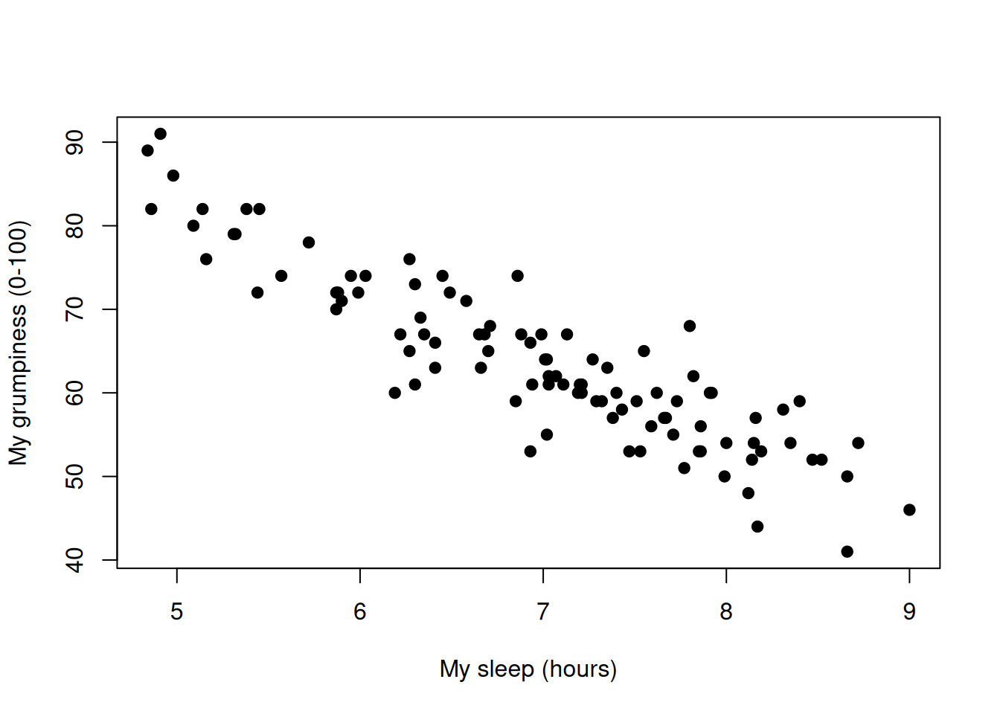
15 Linear regression
The goal in this chapter is to introduce linear regression, the standard tool that statisticians rely on when analysing the relationship between interval scale predictors and interval scale outcomes. Stripped to its bare essentials, linear regression models are basically a slightly fancier version of the Pearson correlation (Section 5.7) though as we’ll see, regression models are much more powerful tools.
15.1 What is a linear regression model?
Since the basic ideas in regression are closely tied to correlation, we’ll return to the parenthood.Rdata file that we were using to illustrate how correlations work. Recall that, in this data set, we were trying to find out why Danielle is so very grumpy all the time, and our working hypothesis was that I’m not getting enough sleep. We drew some scatterplots to help us examine the relationship between the amount of sleep I get, and my grumpiness the following day. The actual scatterplot that we draw is the one shown in Figure 15.1, and as we saw previously this corresponds to a correlation of \(r=-.90\), but what we find ourselves secretly imagining is something that looks closer to Figure 15.2 (a). That is, we mentally draw a straight line through the middle of the data. In statistics, this line that we’re drawing is called a regression line. Notice that – since we’re not idiots – the regression line goes through the middle of the data. We don’t find ourselves imagining anything like the rather silly plot shown in Figure 15.2 (b).
This is not highly surprising: the line that I’ve drawn in Figure 15.2 (b) doesn’t “fit” the data very well, so it doesn’t make a lot of sense to propose it as a way of summarising the data, right? This is a very simple observation to make, but it turns out to be very powerful when we start trying to wrap just a little bit of maths around it. To do so, let’s start with a refresher of some high school maths. The formula for a straight line is usually written like this: \[ y = mx + c \] Or, at least, that’s what it was when I went to high school all those years ago. The two variables are \(x\) and \(y\), and we have two coefficients, \(m\) and \(c\). The coefficient \(m\) represents the slope of the line, and the coefficient \(c\) represents the \(y\)-intercept of the line. Digging further back into our decaying memories of high school (sorry, for some of us high school was a long time ago), we remember that the intercept is interpreted as “the value of \(y\) that you get when \(x=0\)”. Similarly, a slope of \(m\) means that if you increase the \(x\)-value by 1 unit, then the \(y\)-value goes up by \(m\) units; a negative slope means that the \(y\)-value would go down rather than up. Ah yes, it’s all coming back to me now.
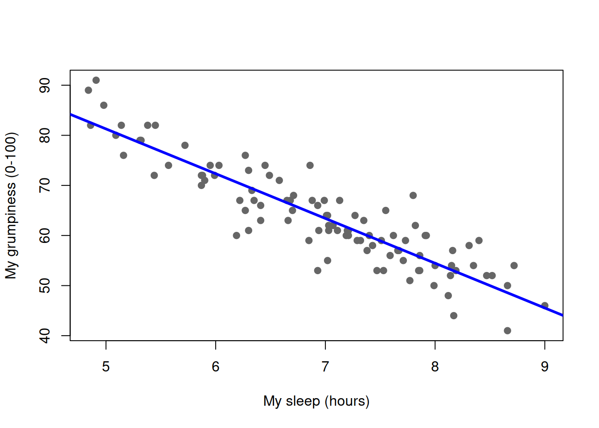
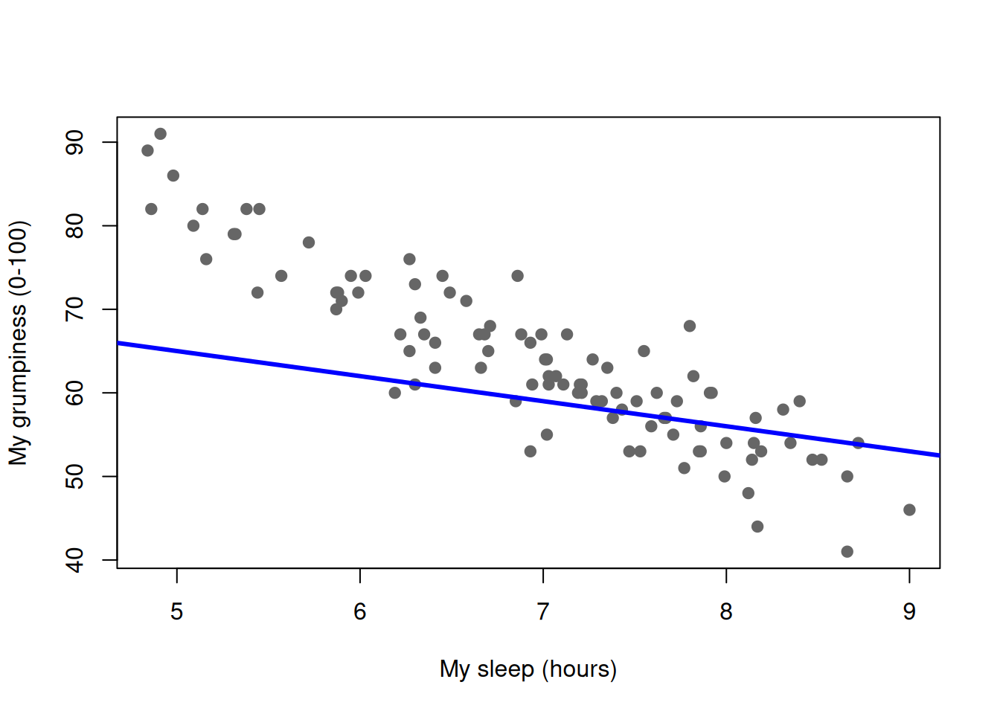
Now that we’ve remembered that, it should come as no surprise to discover that we use the exact same formula to describe a regression line. If \(Y\) is the outcome variable (the DV) and \(X\) is the predictor variable (the IV), then the formula that describes our regression is written like this: \[ \hat{Y_i} = b_1 X_i + b_0 \] Hm. Looks like the same formula, but there’s some extra frilly bits in this version. Let’s make sure we understand them. Firstly, notice that I’ve written \(X_i\) and \(Y_i\) rather than just plain old \(X\) and \(Y\). This is because we want to remember that we’re dealing with actual data. In this equation, \(X_i\) is the value of predictor variable for the \(i\)th observation (i.e., the number of hours of sleep that I got on day \(i\) of my little study), and \(Y_i\) is the corresponding value of the outcome variable (i.e., my grumpiness on that day). And although I haven’t said so explicitly in the equation, what we’re assuming is that this formula works for all observations in the data set (i.e., for all \(i\)). Secondly, notice that I wrote \(\hat{Y}_i\) and not \(Y_i\). This is because we want to make the distinction between the actual data \(Y_i\), and the estimate \(\hat{Y}_i\) (i.e., the prediction that our regression line is making). Thirdly, I changed the letters used to describe the coefficients from \(m\) and \(c\) to \(b_1\) and \(b_0\). That’s just the way that statisticians like to refer to the coefficients in a regression model. I’ve no idea why they chose \(b\), but that’s what they did. In any case \(b_0\) always refers to the intercept term, and \(b_1\) refers to the slope.
Excellent, excellent. Next, I can’t help but notice that – regardless of whether we’re talking about the good regression line or the bad one – the data don’t fall perfectly on the line. Or, to say it another way, the data \(Y_i\) are not identical to the predictions of the regression model \(\hat{Y_i}\). Since statisticians love to attach letters, names and numbers to everything, let’s refer to the difference between the model prediction and that actual data point as a residual, and we’ll refer to it as \(\epsilon_i\).1 Written using mathematics, the residuals are defined as: \[ \epsilon_i = Y_i - \hat{Y}_i \] which in turn means that we can write down the complete linear regression model as: \[ Y_i = b_1 X_i + b_0 + \epsilon_i \]
1 The \(\epsilon\) symbol is the Greek letter epsilon. It’s traditional to use \(\epsilon_i\) or \(e_i\) to denote a residual.
15.2 Estimating a linear regression model
Okay, now let’s redraw our pictures, but this time I’ll add some lines to show the size of the residual for all observations. When the regression line is good, our residuals (the lengths of the solid black lines) all look pretty small, as shown in Figure 15.3 (a), but when the regression line is a bad one, the residuals are a lot larger, as you can see from looking at Figure 15.3 (b).
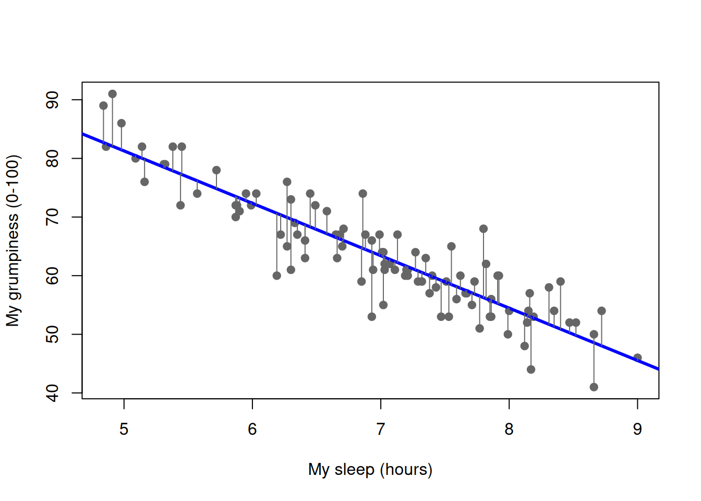
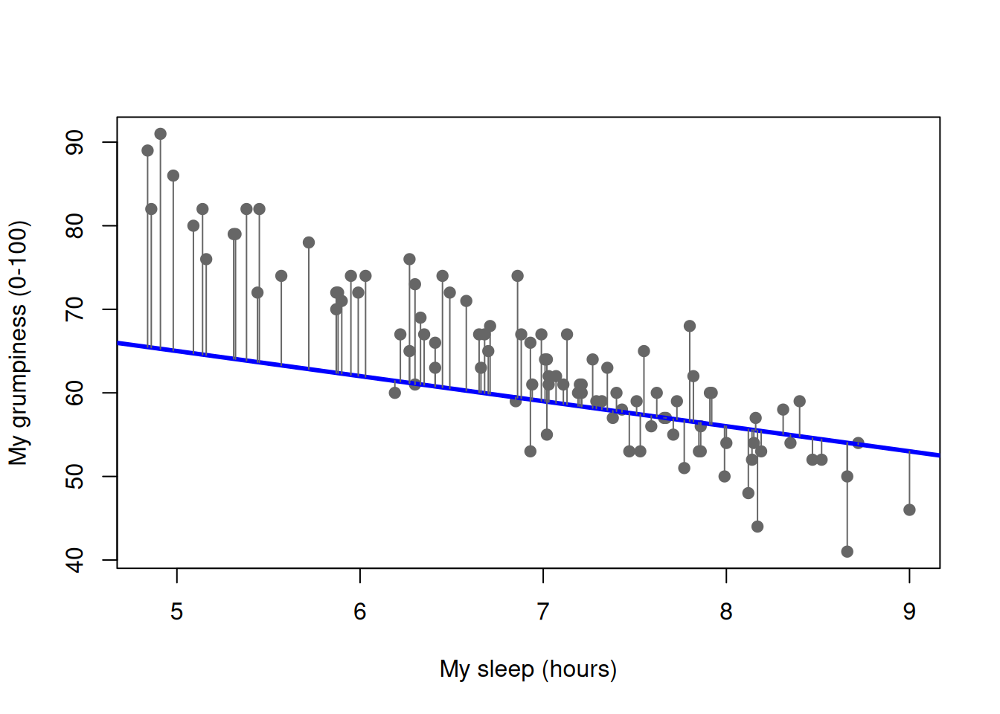
Hm. Maybe what we “want” in a regression model is small residuals. Yes, that does seem to make sense. In fact, I think I’ll go so far as to say that the “best fitting” regression line is the one that has the smallest residuals. Or, better yet, since statisticians seem to like to take squares of everything why not say that …
The estimated regression coefficients, \(\hat{b}_0\) and \(\hat{b}_1\) are those that minimise the sum of the squared residuals, which we could either write as \(\sum_i (Y_i - \hat{Y}_i)^2\) or as \(\sum_i {\epsilon_i}^2\).
Yes, yes that sounds even better. And since I’ve indented it like that, it probably means that this is the right answer. And since this is the right answer, it’s probably worth making a note of the fact that our regression coefficients are estimates (we’re trying to guess the parameters that describe a population!), which is why I’ve added the little hats, so that we get \(\hat{b}_0\) and \(\hat{b}_1\) rather than \(b_0\) and \(b_1\). Finally, I should also note that – since there’s actually more than one way to estimate a regression model – the more technical name for this estimation process is ordinary least squares (OLS) regression.
At this point, we now have a concrete definition for what counts as our “best” choice of regression coefficients, \(\hat{b}_0\) and \(\hat{b}_1\). The natural question to ask next is, if our optimal regression coefficients are those that minimise the sum squared residuals, how do we find these wonderful numbers? The actual answer to this question is complicated, and it doesn’t help you understand the logic of regression.2 As a result, this time I’m going to let you off the hook. Instead of showing you how to do it the long and tedious way first, and then “revealing” the wonderful shortcut that R provides you with, let’s cut straight to the chase… and use the lm() function (short for “linear model”) to do all the heavy lifting.
2 Or at least, I’m assuming that it doesn’t help most people. But on the off chance that someone reading this is a proper kung fu master of linear algebra (and to be fair, I always have a few of these people in my intro stats class), it will help you to know that the solution to the estimation problem turns out to be \(\hat{\mathbf{b}} = (\mathbf{X}^\mathsf{T}\mathbf{X})^{-1} \mathbf{X}^\mathsf{T} \mathbf{y}\), where \(\hat{\mathbf{b}}\) is a vector containing the estimated regression coefficients, \(\mathbf{X}\) is the “design matrix” that contains the predictor variables (plus an additional column containing all ones; strictly \(\mathbf{X}\) is a matrix of the regressors, but I haven’t discussed the distinction yet), and \(\mathbf{y}\) is a vector containing the outcome variable. For everyone else, this isn’t exactly helpful, and can be downright scary. However, since quite a few things in linear regression can be written in linear algebra terms, you’ll see a bunch of footnotes like this one in this chapter. If you can follow the maths in them, great. If not, ignore it.
15.2.1 Using the lm() function
The lm() function is a fairly complicated one: if you type ?lm, the help files will reveal that there are a lot of arguments that you can specify, and most of them won’t make a lot of sense to you. At this stage however, there’s really only two of them that you care about, and as it turns out you’ve seen them before:
formula. A formula that specifies the regression model. For the simple linear regression models that we’ve talked about so far, in which you have a single predictor variable as well as an intercept term, this formula is of the formoutcome ~ predictor. However, more complicated formulas are allowed, and we’ll discuss them later.data. The data frame containing the variables.
As we saw with aov() in Comparing several means (one-way ANOVA), the output of the lm() function is a fairly complicated object, with quite a lot of technical information buried under the hood. Because this technical information is used by other functions, it’s generally a good idea to create a variable that stores the results of your regression. With this in mind, to run my linear regression, the command I want to use is this:
regression_1 <- lm(
formula = danielle_grump ~ danielle_sleep,
data = parenthood
)Note that I used danielle_grump ~ danielle_sleep as the formula: in the model that I’m trying to estimate, danielle_grump is the outcome variable, and danielle_sleep is the predictor variable. It’s always a good idea to remember which one is which! Anyway, what this does is create an “lm object” (i.e., a variable whose class is "lm") called regression_1. Let’s have a look at what happens when we print() it out:
print(regression_1)
Call:
lm(formula = danielle_grump ~ danielle_sleep, data = parenthood)
Coefficients:
(Intercept) danielle_sleep
125.956 -8.937 This looks promising. There’s two separate pieces of information here. Firstly, R is politely reminding us what the command was that we used to specify the model in the first place, which can be helpful. More importantly from our perspective, however, is the second part, in which R gives us the intercept \(\hat{b}_0 = 125.96\) and the slope \(\hat{b}_1 = -8.94\). In other words, the best-fitting regression line that I plotted in Figure 15.2 has this formula: \[ \hat{Y}_i = -8.94\ X_i + 125.96 \]
15.2.2 Interpreting the estimated model
The most important thing to be able to understand is how to interpret these coefficients. Let’s start with \(\hat{b}_1\), the slope. If we remember the definition of the slope, a regression coefficient of \(\hat{b}_1 = -8.94\) means that if I increase \(X_i\) by 1, then I’m decreasing \(Y_i\) by 8.94. That is, each additional hour of sleep that I gain will improve my mood, reducing my grumpiness by 8.94 grumpiness points. What about the intercept? Well, since \(\hat{b}_0\) corresponds to “the expected value of \(Y_i\) when \(X_i\) equals 0”, it’s pretty straightforward. It implies that if I get zero hours of sleep (\(X_i =0\)) then my grumpiness will go off the scale, to an insane value of (\(Y_i = 125.96\)). Best to be avoided, I think.
15.3 Multiple linear regression
The simple linear regression model that we’ve discussed up to this point assumes that there’s a single predictor variable that you’re interested in, in this case danielle_sleep. In fact, up to this point, every statistical tool that we’ve talked about has assumed that your analysis uses one predictor variable and one outcome variable. However, in many (perhaps most) research projects you actually have multiple predictors that you want to examine. If so, it would be nice to be able to extend the linear regression framework to be able to include multiple predictors. Perhaps some kind of multiple regression model would be in order?
Multiple regression is conceptually very simple. All we do is add more terms to our regression equation. Let’s suppose that we’ve got two variables that we’re interested in; perhaps we want to use both danielle_sleep and baby_sleep to predict the danielle_grump variable. As before, we let \(Y_i\) refer to my grumpiness on the \(i\)-th day. But now we have two \(X\) variables: the first corresponding to the amount of sleep I got and the second corresponding to the amount of sleep my son got. So we’ll let \(X_{i1}\) refer to the hours I slept on the \(i\)-th day, and \(X_{i2}\) refers to the hours that the baby slept on that day. If so, then we can write our regression model like this: \[
Y_i = b_2 X_{i2} + b_1 X_{i1} + b_0 + \epsilon_i
\] As before, \(\epsilon_i\) is the residual associated with the \(i\)-th observation, \(\epsilon_i = {Y}_i - \hat{Y}_i\). In this model, we now have three coefficients that need to be estimated: \(b_0\) is the intercept, \(b_1\) is the coefficient associated with my sleep, and \(b_2\) is the coefficient associated with my son’s sleep. However, although the number of coefficients that need to be estimated has changed, the basic idea of how the estimation works is unchanged: our estimated coefficients \(\hat{b}_0\), \(\hat{b}_1\) and \(\hat{b}_2\) are those that minimise the sum squared residuals.
15.3.1 Doing it in R
Multiple regression in R is no different to simple regression: all we have to do is specify a more complicated formula when using the lm() function. For example, if we want to use both danielle_sleep and baby_sleep as predictors in our attempt to explain why I’m so grumpy, then the formula we need is this:
danielle_grump ~ danielle_sleep + baby_sleepNotice that, just like last time, I haven’t explicitly included any reference to the intercept term in this formula; only the two predictor variables and the outcome. By default, the lm() function assumes that the model should include an intercept (though you can get rid of it if you want). In any case, I can create a new regression model – which I’ll call regression_2 – using the following command:
regression_2 <- lm(
formula = danielle_grump ~ danielle_sleep + baby_sleep,
data = parenthood
)And just like last time, if we print() out this regression model we can see what the estimated regression coefficients are:
print(regression_2)
Call:
lm(formula = danielle_grump ~ danielle_sleep + baby_sleep, data = parenthood)
Coefficients:
(Intercept) danielle_sleep baby_sleep
125.96557 -8.95025 0.01052 The coefficient associated with danielle_sleep is quite large, suggesting that every hour of sleep I lose makes me a lot grumpier. However, the coefficient for baby_sleep is very small, suggesting that it doesn’t really matter how much sleep my son gets; not really. What matters as far as my grumpiness goes is how much sleep I get. To get a sense of what this multiple regression model looks like, Figure 15.4 shows a 3D plot that plots all three variables, along with the regression model itself.
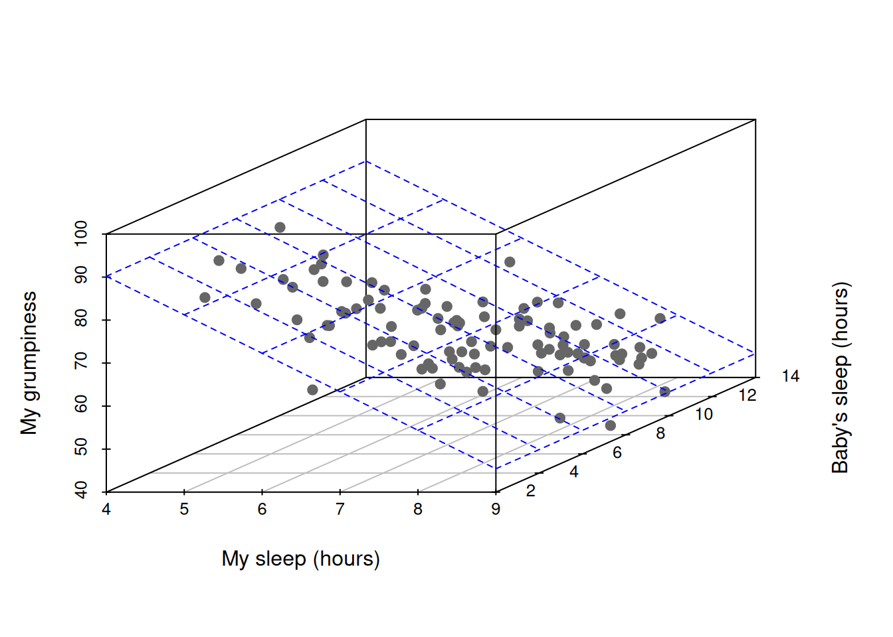
danielle_sleep and baby_sleep; the outcome variable is danielle_grump. Together, these three variables form a 3D space: each observation (grey dots) is a point in this space. In much the same way that a simple linear regression model forms a line in 2D space, this multiple regression model forms a plane in 3D space. When we estimate the regression coefficients, what we’re trying to do is find a plane that is as close to all the grey dots as possible.
15.3.2 Formula for the general case
The equation that I gave above shows you what a multiple regression model looks like when you include two predictors. Not surprisingly, then, if you want more than two predictors all you have to do is add more \(X\) terms and more \(b\) coefficients. In other words, if you have \(K\) predictor variables in the model then the regression equation looks like this: \[ Y_i = \left( \sum_{k=1}^K b_{k} X_{ik} \right) + b_0 + \epsilon_i \]
15.4 Quantifying the fit of the regression model
So we now know how to estimate the coefficients of a linear regression model. The problem is, we don’t yet know if this regression model is any good. For example, the regression_1 model claims that every hour of sleep will improve my mood by quite a lot, but it might just be rubbish. Remember, the regression model only produces a prediction \(\hat{Y}_i\) about what my mood is like: my actual mood is \(Y_i\). If these two are very close, then the regression model has done a good job. If they are very different, then it has done a bad job.
15.4.1 The \(R^2\) value
Once again, let’s wrap a little bit of mathematics around this. Firstly, we’ve got the sum of the squared residuals: \[
\mbox{SS}_{res} = \sum_i (Y_i - \hat{Y}_i)^2
\] which we would hope to be pretty small. Specifically, what we’d like is for it to be very small in comparison to the total variability in the outcome variable, \[
\mbox{SS}_{tot} = \sum_i (Y_i - \bar{Y})^2
\] While we’re here, let’s calculate these values in R. Firstly, in order to make my R commands look a bit more similar to the mathematical equations, I’ll create variables X and Y:
X <- parenthood$danielle_sleep # the predictor
Y <- parenthood$danielle_grump # the outcomeNow that we’ve done this, let’s calculate the \(\hat{Y}\) values and store them in a variable called y_pred. For the simple model that uses only a single predictor, regression_1, we would do the following:
y_pred <- -8.94 * X + 125.96Okay, now that we’ve got a variable which stores the regression model predictions for how grumpy I will be on any given day, let’s calculate our sum of squared residuals. We would do that using the following command:
ss_resid <- sum((Y - y_pred)^2)
print(ss_resid)[1] 1838.75Wonderful. A big number that doesn’t mean very much. Still, let’s forge boldly onwards anyway, and calculate the total sum of squares as well. That’s also pretty simple:
ss_tot <- sum((Y - mean(Y))^2)
print(ss_tot)[1] 9998.59Hm. Well, it’s a much bigger number than the last one, so this does suggest that our regression model was making good predictions. But it’s not very interpretable.
Perhaps we can fix this. What we’d like to do is to convert these two fairly meaningless numbers into one number. A nice, interpretable number, which for no particular reason we’ll call \(R^2\). What we would like is for the value of \(R^2\) to be equal to 1 if the regression model makes no errors in predicting the data. In other words, if it turns out that the residual errors are zero – that is, if \(\mbox{SS}_{res} = 0\) – then we expect \(R^2 = 1\). Similarly, if the model is completely useless, we would like \(R^2\) to be equal to 0. What do I mean by “useless”? Tempting as it is to demand that the regression model move out of the house, cut its hair and get a real job, I’m probably going to have to pick a more practical definition: in this case, all I mean is that the residual sum of squares is no smaller than the total sum of squares, \(\mbox{SS}_{res} = \mbox{SS}_{tot}\). Wait, why don’t we do exactly that? The formula that provides us with out \(R^2\) value is pretty simple to write down, \[ R^2 = 1 - \frac{\mbox{SS}_{res}}{\mbox{SS}_{tot}} \] and equally simple to calculate in R:
r_squared <- 1 - (ss_resid / ss_tot)
print(r_squared)[1] 0.816099The \(R^2\) value, sometimes called the coefficient of determination3 has a simple interpretation: it is the proportion of the variance in the outcome variable that can be accounted for by the predictor. So in this case, the fact that we have obtained \(R^2 = .816\) means that the predictor (danielle_sleep) explains 81.6% of the variance in the outcome (danielle_grump).
3 And by “sometimes” I mean “almost never”. In practice everyone just calls it “\(R\)-squared”.
Naturally, you don’t actually need to type in all these commands yourself if you want to obtain the \(R^2\) value for your regression model. As we’ll see later on in Section 15.5.3, all you need to do is use the summary() function. However, let’s put that to one side for the moment. There’s another property of \(R^2\) that I want to point out.
15.4.2 The relationship between regression and correlation
At this point we can revisit my earlier claim that regression, in this very simple form that I’ve discussed so far, is basically the same thing as a correlation. Previously, we used the symbol \(r\) to denote a Pearson correlation. Might there be some relationship between the value of the correlation coefficient \(r\) and the \(R^2\) value from linear regression? Of course there is: the squared correlation \(r^2\) is identical to the \(R^2\) value for a linear regression with only a single predictor. To illustrate this, here’s the squared correlation:
r <- cor(X, Y) # calculate the correlation
print(r^2) # print the squared correlation[1] 0.8161027Yep, same number. In other words, running a Pearson correlation is more or less equivalent to running a linear regression model that uses only one predictor variable.
15.4.3 The adjusted \(R^2\) value
One final thing to point out before moving on. It’s quite common for people to report a slightly different measure of model performance, known as “adjusted \(R^2\)”. The motivation behind calculating the adjusted \(R^2\) value is the observation that adding more predictors into the model will always call the \(R^2\) value to increase (or at least not decrease). The adjusted \(R^2\) value introduces a slight change to the calculation, as follows. For a regression model with \(K\) predictors, fit to a data set containing \(N\) observations, the adjusted \(R^2\) is: \[ \mbox{adj. } R^2 = 1 - \left(\frac{\mbox{SS}_{res}}{\mbox{SS}_{tot}} \times \frac{N-1}{N-K-1} \right) \] This adjustment is an attempt to take the degrees of freedom into account. The big advantage of the adjusted \(R^2\) value is that when you add more predictors to the model, the adjusted \(R^2\) value will only increase if the new variables improve the model performance more than you’d expect by chance. The big disadvantage is that the adjusted \(R^2\) value can’t be interpreted in the elegant way that \(R^2\) can. \(R^2\) has a simple interpretation as the proportion of variance in the outcome variable that is explained by the regression model; to my knowledge, no equivalent interpretation exists for adjusted \(R^2\).
An obvious question then, is whether you should report \(R^2\) or adjusted \(R^2\). This is probably a matter of personal preference. If you care more about interpretability, then \(R^2\) is better. If you care more about correcting for bias, then adjusted \(R^2\) is probably better. Speaking just for myself, I prefer \(R^2\): my feeling is that it’s more important to be able to interpret your measure of model performance. Besides, as we’ll see in Section 15.5, if you’re worried that the improvement in \(R^2\) that you get by adding a predictor is just due to chance and not because it’s a better model, well, we’ve got hypothesis tests for that.
15.5 Hypothesis tests for regression models
So far we’ve talked about what a regression model is, how the coefficients of a regression model are estimated, and how we quantify the performance of the model (the last of these, incidentally, is basically our measure of effect size). The next thing we need to talk about is hypothesis tests. There are two different (but related) kinds of hypothesis tests that we need to talk about: those in which we test whether the regression model as a whole is performing significantly better than a null model; and those in which we test whether a particular regression coefficient is significantly different from zero.
At this point, you’re probably groaning internally, thinking that I’m going to introduce a whole new collection of tests. You’re probably sick of hypothesis tests by now, and don’t want to learn any new ones. Me too. I’m so sick of hypothesis tests that I’m going to shamelessly reuse the \(F\)-test from Comparing several means (one-way ANOVA) and the \(t\)-test from The \(t\)-test. In fact, all I’m going to do in this section is show you how those tests are imported wholesale into the regression framework.
15.5.1 Testing the model as a whole
Okay, suppose you’ve estimated your regression model. The first hypothesis test you might want to try is one in which the null hypothesis that there is no relationship between the predictors and the outcome, and the alternative hypothesis is that the data are distributed in exactly the way that the regression model predicts. Formally, our “null model” corresponds to the fairly trivial “regression” model in which we include 0 predictors, and only include the intercept term \(b_0\) \[ H_0: Y_i = b_0 + \epsilon_i \] If our regression model has \(K\) predictors, the “alternative model” is described using the usual formula for a multiple regression model: \[ H_1: Y_i = \left( \sum_{k=1}^K b_{k} X_{ik} \right) + b_0 + \epsilon_i \]
How can we test these two hypotheses against each other? The trick is to understand that just like we did with ANOVA, it’s possible to divide up the total variance \(\mbox{SS}_{tot}\) into the sum of the residual variance \(\mbox{SS}_{res}\) and the regression model variance \(\mbox{SS}_{mod}\). I’ll skip over the technicalities, since we covered most of them in the ANOVA chapter, and just note that: \[ \mbox{SS}_{mod} = \mbox{SS}_{tot} - \mbox{SS}_{res} \] And, just like we did with the ANOVA, we can convert the sums of squares in to mean squares by dividing by the degrees of freedom. \[ \begin{array}{rcl} \mbox{MS}_{mod} &=& \displaystyle\frac{\mbox{SS}_{mod} }{df_{mod}} \\[6pt] \mbox{MS}_{res} &=& \displaystyle\frac{\mbox{SS}_{res} }{df_{res}} \end{array} \] So, how many degrees of freedom do we have? As you might expect, the \(df\) associated with the model is closely tied to the number of predictors that we’ve included. In fact, it turns out that \(df_{mod} = K\). For the residuals, the total degrees of freedom is \(df_{res} = N -K - 1\).
Now that we’ve got our mean square values, you’re probably going to be entirely unsurprised (possibly even bored) to discover that we can calculate an \(F\)-statistic like this: \[ F = \frac{\mbox{MS}_{mod}}{\mbox{MS}_{res}} \] and the degrees of freedom associated with this are \(K\) and \(N-K-1\). This \(F\) statistic has exactly the same interpretation as the one we introduced in Comparing several means (one-way ANOVA). Large \(F\) values indicate that the null hypothesis is performing poorly in comparison to the alternative hypothesis. And since we already did some tedious “do it the long way” calculations back then, I won’t waste your time repeating them. In a moment I’ll show you how to do the test in R the easy way, but first, let’s have a look at the tests for the individual regression coefficients.
15.5.2 Tests for individual coefficients
The \(F\)-test that we’ve just introduced is useful for checking that the model as a whole is performing better than chance. This is important: if your regression model doesn’t produce a significant result for the \(F\)-test then you probably don’t have a very good regression model (or, quite possibly, you don’t have very good data). However, while failing this test is a pretty strong indicator that the model has problems, passing the test (i.e., rejecting the null) doesn’t imply that the model is good! Why is that, you might be wondering? The answer to that can be found by looking at the coefficients for the regression_2 model:
print(regression_2)
Call:
lm(formula = danielle_grump ~ danielle_sleep + baby_sleep, data = parenthood)
Coefficients:
(Intercept) danielle_sleep baby_sleep
125.96557 -8.95025 0.01052 I can’t help but notice that the estimated regression coefficient for the baby_sleep variable is tiny (0.01), relative to the value that we get for danielle_sleep (-8.95). Given that these two variables are absolutely on the same scale (they’re both measured in “hours slept”), I find this suspicious. In fact, I’m beginning to suspect that it’s really only the amount of sleep that I get that matters in order to predict my grumpiness.
Once again, we can reuse a hypothesis test that we discussed earlier, this time the \(t\)-test. The test that we’re interested has a null hypothesis that the true regression coefficient is zero (\(b = 0\)), which is to be tested against the alternative hypothesis that it isn’t (\(b \neq 0\)). That is: \[ \begin{array}{rl} H_0: & b = 0 \\ H_1: & b \neq 0 \end{array} \] How can we test this? Well, if the central limit theorem is kind to us, we might be able to guess that the sampling distribution of \(\hat{b}\), the estimated regression coefficient, is a normal distribution with mean centred on \(b\). What that would mean is that if the null hypothesis were true, then the sampling distribution of \(\hat{b}\) has mean zero and unknown standard deviation. Assuming that we can come up with a good estimate for the standard error of the regression coefficient, \(\text{SE}(\hat{b})\), then we’re in luck. That’s exactly the situation for which we introduced the one-sample \(t\) way back in The \(t\)-test. So let’s define a \(t\)-statistic like this, \[ t = \frac{\hat{b}}{\text{SE}(\hat{b})} \] I’ll skip over the reasons why, but our degrees of freedom in this case are \(df = N- K- 1\). Irritatingly, the estimate of the standard error of the regression coefficient, \(\text{SE}(\hat{b})\), is not as easy to calculate as the standard error of the mean that we used for the simpler \(t\)-tests in The \(t\)-test. In fact, the formula is somewhat ugly, and not terribly helpful to look at.4 For our purposes it’s sufficient to point out that the standard error of the estimated regression coefficient depends on both the predictor and outcome variables, and is somewhat sensitive to violations of the homogeneity of variance assumption (discussed shortly).
4 For advanced readers only. The vector of residuals is \(\boldsymbol{\epsilon} = \mathbf{y} - \mathbf{X} \hat{\mathbf{b}}\). For \(K\) predictors plus the intercept, the estimated residual variance is \(\hat\sigma^2 = \boldsymbol{\epsilon}^\mathsf{T} \boldsymbol{\epsilon} / (N-K-1)\). The estimated covariance matrix of the coefficients is \(\hat\sigma^2(\mathbf{X}^\mathsf{T} \mathbf{X})^{-1}\), the main diagonal of which is \(\text{SE}(\hat{\mathbf{b}})\), our estimated standard errors.
In any case, this \(t\)-statistic can be interpreted in the same way as the \(t\)-statistics that we discussed in The \(t\)-test. Assuming that you have a two-sided alternative (i.e., you don’t really care if \(b >0\) or \(b < 0\)), then it’s the extreme values of \(t\) (i.e., a lot less than zero or a lot greater than zero) that suggest that you should reject the null hypothesis.
15.5.3 Running the hypothesis tests in R
To compute all of the quantities that we have talked about so far, all you need to do is ask for a summary() of your regression model. Since I’ve been using regression_2 as my example, let’s do that:
summary(regression_2)
Call:
lm(formula = danielle_grump ~ danielle_sleep + baby_sleep, data = parenthood)
Residuals:
Min 1Q Median 3Q Max
-11.0345 -2.2198 -0.4016 2.6775 11.7496
Coefficients:
Estimate Std. Error t value Pr(>|t|)
(Intercept) 125.96557 3.04095 41.423 <2e-16 ***
danielle_sleep -8.95025 0.55346 -16.172 <2e-16 ***
baby_sleep 0.01052 0.27106 0.039 0.969
---
Signif. codes: 0 '***' 0.001 '**' 0.01 '*' 0.05 '.' 0.1 ' ' 1
Residual standard error: 4.354 on 97 degrees of freedom
Multiple R-squared: 0.8161, Adjusted R-squared: 0.8123
F-statistic: 215.2 on 2 and 97 DF, p-value: < 2.2e-16The output that this command produces is pretty dense, but we’ve already discussed everything of interest in it, so what I’ll do is go through it line by line. The first line reminds us of what the actual regression model is:
Call:
lm(formula = danielle_grump ~ danielle_sleep + baby_sleep, data = parenthood)You can see why this is handy, since it was a little while back when we actually created the regression_2 model, and so it’s nice to be reminded of what it was we were doing. The next part provides a quick summary of the residuals (i.e., the \(\epsilon_i\) values), which can be convenient as a quick and dirty check that the model is okay. Remember, we did assume that these residuals were normally distributed, with mean 0. In particular it’s worth quickly checking to see if the median is close to zero, and to see if the first quartile is about the same size as the third quartile. If they look badly off, there’s a good chance that the assumptions of regression are violated. These ones look pretty nice to me, so let’s move on to the interesting stuff. The next part of the R output looks at the coefficients of the regression model. Each row in this table refers to one of the coefficients in the regression model. The first row is the intercept term, and the later ones look at each of the predictors. The columns give you all of the relevant information. The first column is the actual estimate of \(b\) (e.g., 125.96 for the intercept, and -8.9 for the danielle_sleep predictor). The second column is the standard error estimate \(\hat\sigma_b\). The third column gives you the \(t\)-statistic, and it’s worth noticing that in this table \(t= \hat{b}/ \text{SE}(\hat{b})\) every time. Finally, the fourth column gives you the actual \(p\) value for each of these tests.5 The only thing that the table itself doesn’t list is the degrees of freedom used in the \(t\)-test, which is always \(N-K-1\) and is listed immediately below, alongside the \(F\)-test and the \(R^2\) values which assess the performance of the model as a whole. So in this case, the model performs significantly better than you’d expect by chance (\(F(2,97) = 215.2\), \(p<.001\)), which isn’t all that surprising: the \(R^2 = .816\) value indicates that the regression model accounts for 81.6% of the variability in the outcome measure. However, when we look back up at the \(t\)-tests for each of the individual coefficients, we have pretty strong evidence that the baby_sleep variable has no significant effect; all the work is being done by the danielle_sleep variable. Taken together, these results suggest that regression_2 is actually the wrong model for the data: you’d probably be better off dropping the baby_sleep predictor entirely. In other words, the regression_1 model that we started with is the better model.
5 Note that, although R has done multiple tests here, it hasn’t done a Bonferroni correction or anything. These are standard one-sample \(t\)-tests with a two-sided alternative. If you want to make corrections for multiple tests, you need to do that yourself.
15.6 Testing the significance of a correlation
15.6.1 Hypothesis tests for a single correlation
I don’t want to spend too much time on this, but it’s worth very briefly returning to the point I made earlier, that Pearson correlations are basically the same thing as linear regressions with only a single predictor added to the model. What this means is that the hypothesis tests that I just described in a regression context can also be applied to correlation coefficients. To see this, let’s take a summary() of the regression_1 model:
summary(regression_1)
Call:
lm(formula = danielle_grump ~ danielle_sleep, data = parenthood)
Residuals:
Min 1Q Median 3Q Max
-11.025 -2.213 -0.399 2.681 11.750
Coefficients:
Estimate Std. Error t value Pr(>|t|)
(Intercept) 125.9563 3.0161 41.76 <2e-16 ***
danielle_sleep -8.9368 0.4285 -20.85 <2e-16 ***
---
Signif. codes: 0 '***' 0.001 '**' 0.01 '*' 0.05 '.' 0.1 ' ' 1
Residual standard error: 4.332 on 98 degrees of freedom
Multiple R-squared: 0.8161, Adjusted R-squared: 0.8142
F-statistic: 434.9 on 1 and 98 DF, p-value: < 2.2e-16The important thing to note here is the \(t\) test associated with the predictor, in which we get a result of \(t(98) = -20.85\), \(p<.001\). Now let’s compare this to the output of a different function, which goes by the name of cor.test(). As you might expect, this function runs a hypothesis test to see if the observed correlation between two variables is significantly different from 0. Let’s have a look:
cor.test(x = parenthood$danielle_sleep, y = parenthood$danielle_grump)
Pearson's product-moment correlation
data: parenthood$danielle_sleep and parenthood$danielle_grump
t = -20.854, df = 98, p-value < 2.2e-16
alternative hypothesis: true correlation is not equal to 0
95 percent confidence interval:
-0.9340614 -0.8594714
sample estimates:
cor
-0.903384 Again, the key thing to note is the line that reports the hypothesis test itself, which seems to be saying that \(t(98) = -20.85\), \(p<.001\). Hm. Looks like it’s exactly the same test, doesn’t it? And that’s exactly what it is. The test for the significance of a correlation is identical to the \(t\) test that we run on a coefficient in a regression model.
15.6.2 Hypothesis tests for all pairwise correlations
Okay, one more digression before I return to regression properly. In the previous section I talked about the cor.test() function, which lets you run a hypothesis test on a single correlation. The cor.test() function is (obviously) an extension of the cor() function, which we talked about in Section 5.7. However, the cor() function isn’t restricted to computing a single correlation: you can use it to compute all pairwise correlations among the variables in your data set. This leads people to the natural question: can the cor.test() function do the same thing? Can we use cor.test() to run hypothesis tests for all possible pairwise correlations among the variables in a data frame?
The answer is no, and there’s a very good reason for this. Testing a single correlation is fine: if you’ve got some reason to be asking “is A related to B?”, then you should absolutely run a test to see if there’s a significant correlation. But if you’ve got variables A, B, C, D and E and you’re thinking about testing the correlations among all possible pairs of these, a statistician would want to ask: what’s your hypothesis? If you’re in the position of wanting to test all possible pairs of variables, then you’re pretty clearly on a fishing expedition, hunting around in search of significant effects when you don’t actually have a clear research hypothesis in mind. This is dangerous, and the authors of cor.test() obviously felt that they didn’t want to support that kind of behaviour.
On the other hand… a somewhat less hardline view might be to argue we’ve encountered this situation before, back in Section 14.5 when we talked about post hoc tests in ANOVA. When running post hoc tests, we didn’t have any specific comparisons in mind, so what we did was apply a correction (e.g., Bonferroni, Holm, etc) in order to avoid the possibility of an inflated Type I error rate. From this perspective, it’s okay to run hypothesis tests on all your pairwise correlations, but you must treat them as post hoc analyses, and if so you need to apply a correction for multiple comparisons. That’s what the correlate() function in the lsr package does. When we use the correlate() function in Section 5.7 all it did was print out the correlation matrix. But you can get it to output the results of all the pairwise tests as well by specifying test=TRUE. Here’s what happens with the parenthood data:
correlate(parenthood, test = TRUE)
CORRELATIONS
============
- correlation type: pearson
- correlations shown only when both variables are numeric
danielle_sleep baby_sleep danielle_grump day
danielle_sleep . 0.628*** -0.903*** -0.098
baby_sleep 0.628*** . -0.566*** -0.010
danielle_grump -0.903*** -0.566*** . 0.076
day -0.098 -0.010 0.076 .
---
Signif. codes: . = p < .1, * = p<.05, ** = p<.01, *** = p<.001
p-VALUES
========
- total number of tests run: 6
- correction for multiple testing: holm
danielle_sleep baby_sleep danielle_grump day
danielle_sleep . 0.000 0.000 0.990
baby_sleep 0.000 . 0.000 0.990
danielle_grump 0.000 0.000 . 0.990
day 0.990 0.990 0.990 .
SAMPLE SIZES
============
danielle_sleep baby_sleep danielle_grump day
danielle_sleep 100 100 100 100
baby_sleep 100 100 100 100
danielle_grump 100 100 100 100
day 100 100 100 100The output here contains three matrices. First it prints out the correlation matrix. Second it prints out a matrix of \(p\)-values, using the Holm method6 to correct for multiple comparisons. Finally, it prints out a matrix indicating the sample size (number of pairwise complete cases) that contributed to each correlation.
6 You can change the kind of correction it applies by specifying the p.adjust.method argument.
So there you have it. If you really desperately want to do pairwise hypothesis tests on your correlations, the correlate() function will let you do it. But please, please be careful. I can’t count the number of times I’ve had a student panicking in my office because they’ve run these pairwise correlation tests, and they get one or two significant results that don’t make any sense. For some reason, the moment people see those little significance stars appear, they feel compelled to throw away all common sense and assume that the results must correspond to something real that requires an explanation. In most such cases, my experience has been that the right answer is “it’s a Type I error”.
15.7 Regarding regression coefficients
Before moving on to discuss the assumptions underlying linear regression and what you can do to check if they’re being met, there’s two more topics I want to briefly discuss, both of which relate to the regression coefficients. The first thing to talk about is calculating confidence intervals for the coefficients; after that, I’ll discuss the somewhat murky question of how to determine which of predictor is most important.
15.7.1 Confidence intervals for the coefficients
Like any population parameter, the regression coefficients \(b\) cannot be estimated with complete precision from a sample of data; that’s part of why we need hypothesis tests. Given this, it’s quite useful to be able to report confidence intervals that capture our uncertainty about the true value of \(b\). This is especially useful when the research question focuses heavily on an attempt to find out how strongly variable \(X\) is related to variable \(Y\), since in those situations the interest is primarily in the regression weight \(b\). Fortunately, confidence intervals for the regression weights can be constructed in the usual fashion, \[
\mbox{CI}(b) = \hat{b} \pm \left( t_{crit} \times \text{SE}(\hat{b}) \right)
\] where \(\text{SE}(\hat{b})\) is the standard error of the regression coefficient, and \(t_{crit}\) is the relevant critical value of the appropriate \(t\) distribution. For instance, if it’s a 95% confidence interval that we want, then the critical value is the 97.5th quantile of a \(t\) distribution with \(N-K-1\) degrees of freedom. In other words, this is basically the same approach to calculating confidence intervals that we’ve used throughout. To do this in R we can use the confint() function. There arguments to this function are
object. The regression model (lmobject) for which confidence intervals are required.parm. A vector indicating which coefficients we should calculate intervals for. This can be either a vector of numbers or (more usefully) a character vector containing variable names. By default, all coefficients are included, so usually you don’t bother specifying this argument.level. A number indicating the confidence level that should be used. As is usually the case, the default value is 0.95, so you wouldn’t usually need to specify this argument.
So, suppose I want 99% confidence intervals for the coefficients in the regression_2 model. I could do this using the following command:
confint(
object = regression_2,
level = .99
) 0.5 % 99.5 %
(Intercept) 117.9755724 133.9555593
danielle_sleep -10.4044419 -7.4960575
baby_sleep -0.7016868 0.7227357Simple enough.
15.7.2 Calculating standardised regression coefficients
One more thing that you might want to do is to calculate “standardised” regression coefficients, often denoted \(\beta\). The rationale behind standardised coefficients goes like this. In a lot of situations, your variables are on fundamentally different scales. Suppose, for example, my regression model aims to predict people’s IQ scores, using their educational attainment (number of years of education) and their income as predictors. Obviously, educational attainment and income are not on the same scales: the number of years of schooling can only vary by 10s of years, whereas income would vary by 10,000s of dollars (or more). The units of measurement have a big influence on the regression coefficients: the \(b\) coefficients only make sense when interpreted in light of the units, both of the predictor variables and the outcome variable. This makes it very difficult to compare the coefficients of different predictors. Yet there are situations where you really do want to make comparisons between different coefficients. Specifically, you might want some kind of standard measure of which predictors have the strongest relationship to the outcome. This is what standardised coefficients aim to do.
The basic idea is quite simple: the standardised coefficients are the coefficients that you would have obtained if you’d converted all the variables to \(z\)-scores before running the regression.7 The idea here is that, by converting all the predictors to \(z\)-scores, they all go into the regression on the same scale, thereby removing the problem of having variables on different scales. Regardless of what the original variables were, a \(\beta\) value of 1 means that an increase in the predictor of 1 standard deviation will produce a corresponding 1 standard deviation increase in the outcome variable. Therefore, if variable A has a larger absolute value of \(\beta\) than variable B, it is deemed to have a stronger relationship with the outcome. Or at least that’s the idea: it’s worth being a little cautious here, since this does rely very heavily on the assumption that “a 1 standard deviation change” is fundamentally the same kind of thing for all variables. It’s not always obvious that this is true.
7 Strictly, you standardise all the regressors: that is, every “thing” that has a regression coefficient associated with it in the model. For the regression models that I’ve talked about so far, each predictor variable maps onto exactly one regressor, and vice versa. However, that’s not actually true in general: we’ll see some examples of this in Factorial ANOVA. But for now, we don’t need to care too much about this distinction.
Leaving aside the interpretation issues, let’s look at how it’s calculated. What you could do is standardise all the variables yourself and then run a regression, but there’s a much simpler way to do it. As it turns out, the \(\beta\) coefficient for a predictor \(X\) and outcome \(Y\) has a very simple formula, namely \[
\beta_X = b_X \times \frac{\sigma_X}{\sigma_Y}
\] where \(\sigma_X\) is the standard deviation of the predictor, and \(\sigma_Y\) is the standard deviation of the outcome variable \(Y\). This makes matters a lot simpler. To make things even simpler, the lsr package includes a function standardCoefs() that computes the \(\beta\) coefficients.
standardCoefs(regression_2) b beta
danielle_sleep -8.95024973 -0.90474809
baby_sleep 0.01052447 0.00217223This clearly shows that the danielle_sleep variable has a much stronger effect than the baby_sleep variable. However, this is a perfect example of a situation where it would probably make sense to use the original coefficients \(b\) rather than the standardised coefficients \(\beta\). After all, my sleep and the baby’s sleep are already on the same scale: number of hours slept. Why complicate matters by converting these to \(z\)-scores?
15.8 Assumptions of regression
The linear regression model that I’ve been discussing relies on several assumptions. In Section 15.9 we’ll talk a lot more about how to check that these assumptions are being met, but first, let’s have a look at each of them.
- Normality. Like half the models in statistics, standard linear regression relies on an assumption of normality. Specifically, it assumes that the residuals are normally distributed. It’s actually okay if the predictors \(X\) and the outcome \(Y\) are non-normal, so long as the residuals \(\epsilon\) are normal. See Section 15.9.3.
- Linearity. A pretty fundamental assumption of the linear regression model is that relationship between \(X\) and \(Y\) actually be linear! Regardless of whether it’s a simple regression or a multiple regression, we assume that the relationships involved are linear. See Section 15.9.4.
- Homogeneity of variance. Strictly speaking, the regression model assumes that each residual \(\epsilon_i\) is generated from a normal distribution with mean 0, and (more importantly for the current purposes) with a standard deviation \(\sigma\) that is the same for every single residual. In practice, it’s impossible to test the assumption that every residual is identically distributed. Instead, what we care about is that the standard deviation of the residual is the same for all values of \(\hat{Y}\), and (if we’re being especially paranoid) all values of every predictor \(X\) in the model. See Section 15.9.5.
- Uncorrelated predictors. The idea here is that, in a multiple regression model, you don’t want your predictors to be too strongly correlated with each other. This isn’t “technically” an assumption of the regression model, but in practice it’s required. Predictors that are too strongly correlated with each other (referred to as “collinearity”) can cause problems when evaluating the model. See Section 15.9.6.
- Residuals are independent of each other. This is really just a “catch all” assumption, to the effect that “there’s nothing else funny going on in the residuals”. If there is something weird (e.g., the residuals all depend heavily on some other unmeasured variable) going on, it might screw things up.
- No “bad” outliers. Again, not actually a technical assumption of the model (or rather, it’s sort of implied by all the others), but there is an implicit assumption that your regression model isn’t being too strongly influenced by one or two anomalous data points; since this raises questions about the adequacy of the model, and the trustworthiness of the data in some cases. See Section 15.9.2.
15.9 Model checking
The main focus of this section is regression diagnostics, a term that refers to the art of checking that the assumptions of your regression model have been met, figuring out how to fix the model if the assumptions are violated, and generally to check that nothing “funny” is going on. I refer to this as the “art” of model checking with good reason: it’s not easy, and while there are a lot of fairly standardised tools that you can use to diagnose and maybe even cure the problems that ail your model (if there are any, that is!), you really do need to exercise a certain amount of judgment when doing this. It’s easy to get lost in all the details of checking this thing or that thing, and it’s quite exhausting to try to remember what all the different things are. This has the very nasty side effect that a lot of people get frustrated when trying to learn all the tools, so instead they decide not to do any model checking. This is a bit of a worry!
In this section, I describe several different things you can do to check that your regression model is doing what it’s supposed to. It doesn’t cover the full space of things you could do, but it’s still much more detailed than what I see a lot of people doing in practice; and I don’t usually cover all of this in my intro stats class myself. However, I do think it’s important that you get a sense of what tools are at your disposal, so I’ll try to introduce a bunch of them here. Finally, I should note that this section draws quite heavily from the Fox & Weisberg (2011) text, the book associated with the car package. The car package is notable for providing some excellent tools for regression diagnostics, and the book itself talks about them in an admirably clear fashion. I don’t want to sound too gushy about it, but I do think that Fox & Weisberg (2011) is well worth reading.
15.9.1 Three kinds of residuals
The majority of regression diagnostics revolve around looking at the residuals, and by now you’ve probably formed a sufficiently pessimistic theory of statistics to be able to guess that – precisely because of the fact that we care a lot about the residuals – there are several different kinds of residual that we might consider. In particular, the following three kinds of residual are referred to in this section: “ordinary residuals”, “standardised residuals”, and “Studentised residuals”. There is a fourth kind that you’ll see referred to in some of the figures, and that’s the “Pearson residual”: however, for the models that we’re talking about in this chapter, the Pearson residual is identical to the ordinary residual.
The first and simplest kind of residuals that we care about are ordinary residuals. These are the actual, raw residuals that I’ve been talking about throughout this chapter. The ordinary residual is just the difference between the fitted value \(\hat{Y}_i\) and the observed value \(Y_i\). I’ve been using the notation \(\epsilon_i\) to refer to the \(i\)-th ordinary residual, and by gum I’m going to stick to it. With this in mind, we have the very simple equation \[ \epsilon_i = Y_i - \hat{Y}_i \] This is of course what we saw earlier, and unless I specifically refer to some other kind of residual, this is the one I’m talking about. So there’s nothing new here: I just wanted to repeat myself. In any case, you can get R to output a vector of ordinary residuals, you can use a command like this:
residuals(object = regression_2)One drawback to using ordinary residuals is that they’re always on a different scale, depending on what the outcome variable is and how good the regression model is. That is, unless you’ve decided to run a regression model without an intercept term, the ordinary residuals will have mean 0; but the variance is different for every regression. In a lot of contexts, especially where you’re only interested in the pattern of the residuals and not their actual values, it’s convenient to estimate the standardised residuals, which are normalised in such a way as to have standard deviation 1. The way we calculate these is to divide the ordinary residual by an estimate of the (population) standard deviation of these residuals. For technical reasons, mumble mumble, the formula for this is: \[ \epsilon_{i}^\prime = \frac{\epsilon_i}{\hat{\sigma} \sqrt{1-h_i}} \] where \(\hat\sigma\) in this context is the estimated population standard deviation of the ordinary residuals, and \(h_i\) is the “hat value” of the \(i\)th observation. I haven’t explained hat values to you yet (but have no fear,8 it’s coming shortly), so this won’t make a lot of sense. For now, it’s enough to interpret the standardised residuals as if we’d converted the ordinary residuals to \(z\)-scores. In fact, that is more or less the truth, it’s just that we’re being a bit fancier. To get the standardised residuals, the command you want is this:
8 Or have no hope, as the case may be.
rstandard(model = regression_2)Note that this function uses a different name for the input argument, but it’s still just a linear regression object that the function wants to take as its input here.
The third kind of residuals are Studentised residuals (also called “jackknifed residuals”) and they’re even fancier than standardised residuals. Again, the idea is to take the ordinary residual and divide it by some quantity in order to estimate some standardised notion of the residual, but the formula for doing the calculations this time is subtly different: \[ \epsilon_{i}^* = \frac{\epsilon_i}{\hat{\sigma}_{(-i)} \sqrt{1-h_i}} \] Notice that our estimate of the standard deviation here is written \(\hat{\sigma}_{(-i)}\). What this corresponds to is the estimate of the residual standard deviation that you would have obtained, if you just deleted the \(i\)th observation from the data set. This sounds like the sort of thing that would be a nightmare to calculate, since it seems to be saying that you have to run \(N\) new regression models (even a modern computer might grumble a bit at that, especially if you’ve got a large data set). Fortunately, some terribly clever person has shown that this standard deviation estimate is actually given by the following equation: \[ \hat\sigma_{(-i)} = \hat{\sigma} \ \sqrt{\frac{N-K-1 - {\epsilon_{i}^\prime}^2}{N-K-2}} \] Isn’t that a pip? Anyway, the command that you would use if you wanted to pull out the Studentised residuals for our regression model is
rstudent(model = regression_2)Before moving on, I should point out that you don’t often need to manually extract these residuals yourself, even though they are at the heart of almost all regression diagnostics. That is, the residuals(), rstandard() and rstudent() functions are all useful to know about, but most of the time the various functions that run the diagnostics will take care of these calculations for you. Even so, it’s always nice to know how to actually get hold of these things yourself in case you ever need to do something non-standard.
15.9.2 Three kinds of anomalous data
One danger that you can run into with linear regression models is that your analysis might be disproportionately sensitive to a smallish number of “unusual” or “anomalous” observations. I discussed this idea previously in Section 6.5.2 in the context of discussing the outliers that get automatically identified by the boxplot() function, but this time we need to be much more precise. In the context of linear regression, there are three conceptually distinct ways in which an observation might be called “anomalous”. All three are interesting, but they have rather different implications for your analysis.9
9 The original book illustrates these three concepts with hand-drawn schematic diagrams rather than R-generated figures. In their place, the figures below are built from a small simulated data set constructed to display each phenomenon clearly, following the precedent set for other from-scratch figures elsewhere in this book.
The first kind of unusual observation is an outlier. The definition of an outlier (in this context) is an observation that is very different from what the regression model predicts. An example is shown in Figure 15.5: the anomalous observation (blue dot) has an unusual value on the outcome (y axis location) but not the predictor (x axis location), and lies a long way from the dashed regression line that would have been estimated without it. Including it (solid blue line) shifts the regression line only slightly. In practice, we operationalise this concept by saying that an outlier is an observation that has a very large Studentised residual, \(\epsilon_i^*\). Outliers are interesting: a big outlier might correspond to junk data – e.g., the variables might have been entered incorrectly, or some other defect may be detectable. Note that you shouldn’t throw an observation away just because it’s an outlier. But the fact that it’s an outlier is often a cue to look more closely at that case, and try to find out why it’s so different.
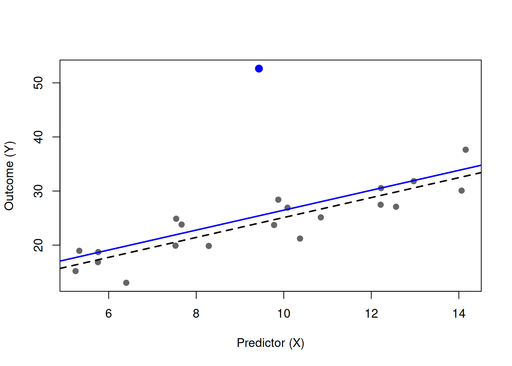
The second way in which an observation can be unusual is if it has high leverage: this happens when the observation is very different from all the other observations. This doesn’t necessarily have to correspond to a large residual: if the observation happens to be unusual on all variables in precisely the same way, it can actually lie very close to the regression line. An example of this is shown in Figure 15.6. The leverage of an observation is operationalised in terms of its hat value, usually written \(h_i\). The formula for the hat value is rather complicated10 but its interpretation is not: \(h_i\) is a measure of the extent to which the \(i\)-th observation is “in control” of where the regression line ends up going. You can extract the hat values using the following command:
10 Again, for the linear algebra fanatics: the “hat matrix” is defined to be that matrix \(\mathbf{H}\) that converts the vector of observed values \(\mathbf{y}\) into a vector of fitted values \(\hat{\mathbf{y}}\), such that \(\hat{\mathbf{y}} = \mathbf{H} \mathbf{y}\). The name comes from the fact that this is the matrix that “puts a hat on \(\mathbf{y}\)”. The hat value of the \(i\)-th observation is the \(i\)-th diagonal element of this matrix (so technically I should be writing it as \(h_{ii}\) rather than \(h_{i}\)). Oh, and in case you care, here’s how it’s calculated: \(\mathbf{H} = \mathbf{X}(\mathbf{X}^\mathsf{T}\mathbf{X})^{-1} \mathbf{X}^\mathsf{T}\). Pretty, isn’t it?
hatvalues(model = regression_2)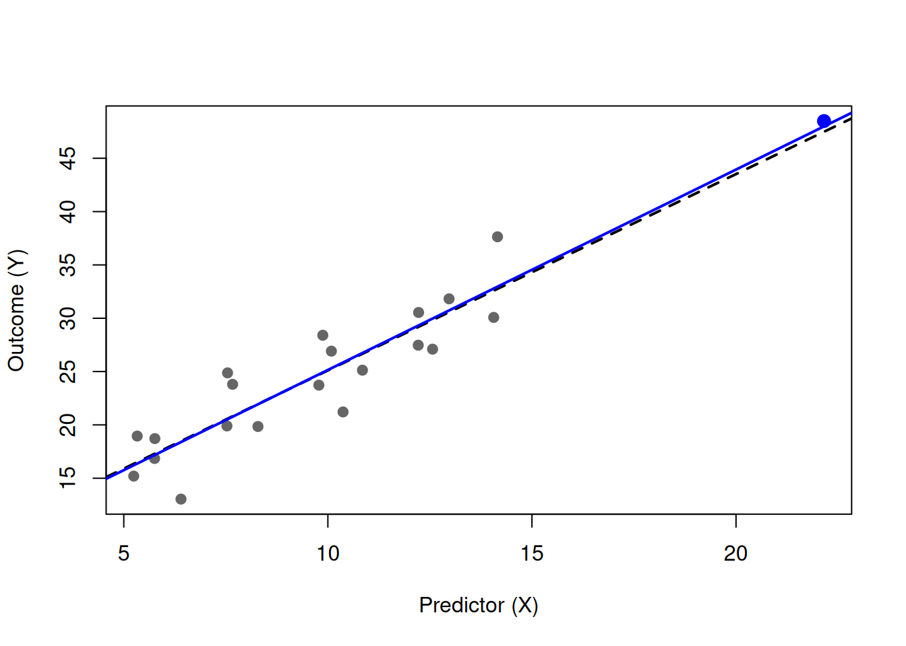
In general, if an observation lies far away from the other ones in terms of the predictor variables, it will have a large hat value (as a rough guide, high leverage is when the hat value is more than 2-3 times the average; and note that the sum of the hat values is constrained to be equal to \(K+1\)). High leverage points are also worth looking at in more detail, but they’re much less likely to be a cause for concern unless they are also outliers.
This brings us to our third measure of unusualness, the influence of an observation. A high influence observation is an outlier that has high leverage. That is, it is an observation that is very different to all the other ones in some respect, and also lies a long way from the regression line. This is illustrated in Figure 15.7. Notice the contrast to the previous two figures: outliers don’t move the regression line much, and neither do high leverage points. But something that is an outlier and has high leverage… that has a big effect on the regression line. That’s why we call these points high influence; and it’s why they’re the biggest worry.
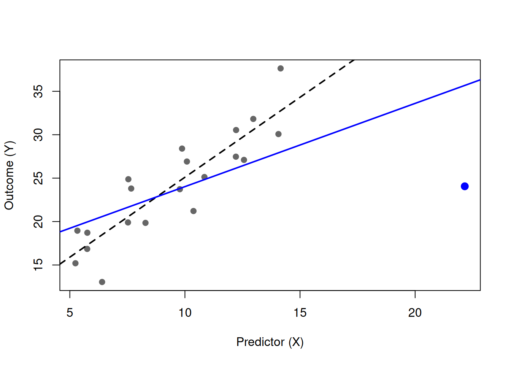
We operationalise influence in terms of a measure known as Cook’s distance, \[ D_i = \frac{{\epsilon_i^*}^2 }{K+1} \times \frac{h_i}{1-h_i} \] Notice that this is a multiplication of something that measures the outlier-ness of the observation (the bit on the left), and something that measures the leverage of the observation (the bit on the right). In other words, in order to have a large Cook’s distance, an observation must be a fairly substantial outlier and have high leverage. In a stunning turn of events, you can obtain these values using the following command:
cooks.distance(model = regression_2)As a rough guide, Cook’s distance greater than 1 is often considered large (that’s what I typically use as a quick and dirty rule), though a quick scan of the internet and a few papers suggests that \(4/N\) has also been suggested as a possible rule of thumb.
As hinted above, you don’t usually need to make use of these functions, since you can have R automatically draw the critical plots.11 For the regression_2 model, these are the plots showing Cook’s distance (Figure 15.8) and the more detailed breakdown showing the scatter plot of the Studentised residual against leverage (Figure 15.9). To draw these, we can use the plot() function. When the main argument x to this function is a linear model object, it will draw one of six different plots, each of which is quite useful for doing regression diagnostics. You specify which one you want using the which argument (a number between 1 and 6). If you don’t do this then R will draw all six. The two plots of interest to us in this context are generated using the following commands:
11 Though special mention should be made of the influenceIndexPlot() and influencePlot() functions in the car package. These produce somewhat more detailed pictures than the default plots that I’ve shown here. There’s also an outlierTest() function that tests to see if any of the Studentised residuals are significantly larger than would be expected by chance.
plot(x = regression_2, which = 4)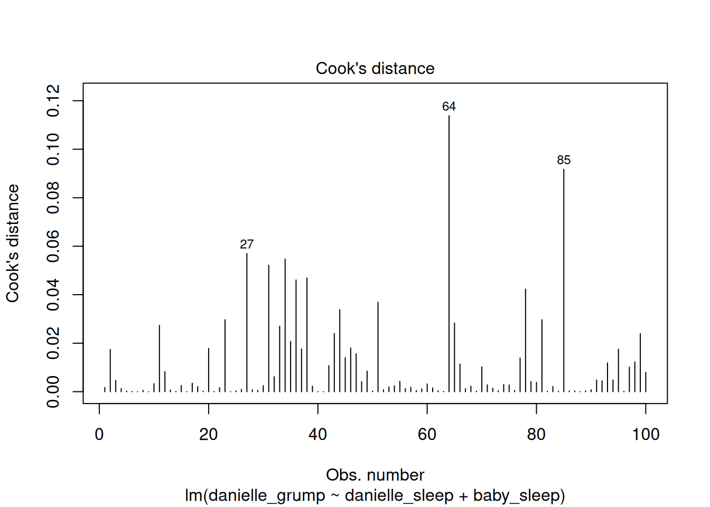
plot() function when the input is a linear regression object. It is obtained by setting which = 4.
plot(x = regression_2, which = 5)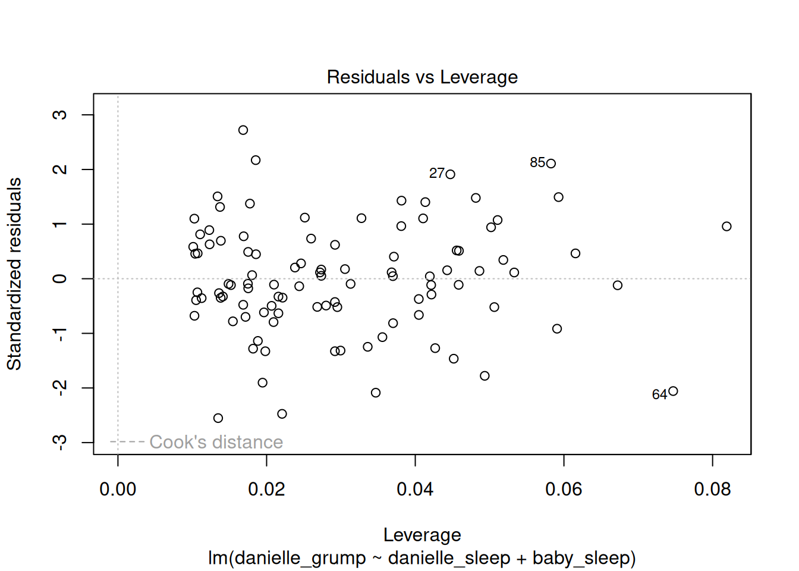
plot() function when the input is a linear regression object. It is obtained by setting which = 5.
An obvious question to ask next is, if you do have large values of Cook’s distance, what should you do? As always, there’s no hard and fast rules. Probably the first thing to do is to try running the regression with that point excluded and see what happens to the model performance and to the regression coefficients. If they really are substantially different, it’s time to start digging into your data set and your notes that you no doubt were scribbling as you ran your study; try to figure out why the point is so different. If you start to become convinced that this one data point is badly distorting your results, you might consider excluding it, but that’s less than ideal unless you have a solid explanation for why this particular case is qualitatively different from the others and therefore deserves to be handled separately.12 To give an example, let’s delete the observation from day 64, the observation with the largest Cook’s distance for the regression_2 model. We can do this using the subset argument:
12 An alternative is to run a “robust regression”. I had at one stage wanted to discuss robust regression in a later version of this book, but it seems unlikely that will happen.
lm(
formula = danielle_grump ~ danielle_sleep + baby_sleep, # same formula
data = parenthood, # same data frame...
subset = -64 # ...but observation 64 is deleted
)
Call:
lm(formula = danielle_grump ~ danielle_sleep + baby_sleep, data = parenthood,
subset = -64)
Coefficients:
(Intercept) danielle_sleep baby_sleep
126.3553 -8.8283 -0.1319 As you can see, those regression coefficients have barely changed in comparison to the values we got earlier. In other words, we really don’t have any problem as far as anomalous data are concerned.
15.9.3 Checking the normality of the residuals
Like many of the statistical tools we’ve discussed in this book, regression models rely on a normality assumption. In this case, we assume that the residuals are normally distributed. The tools for testing this aren’t fundamentally different to those that we discussed earlier in Section 13.9. Firstly, I firmly believe that it never hurts to draw an old fashioned histogram. The command I use might be something like this:
hist(
x = residuals(regression_2), # data are the residuals
xlab = "Value of residual", # x-axis label
main = "", # no title
breaks = 20 # lots of breaks
)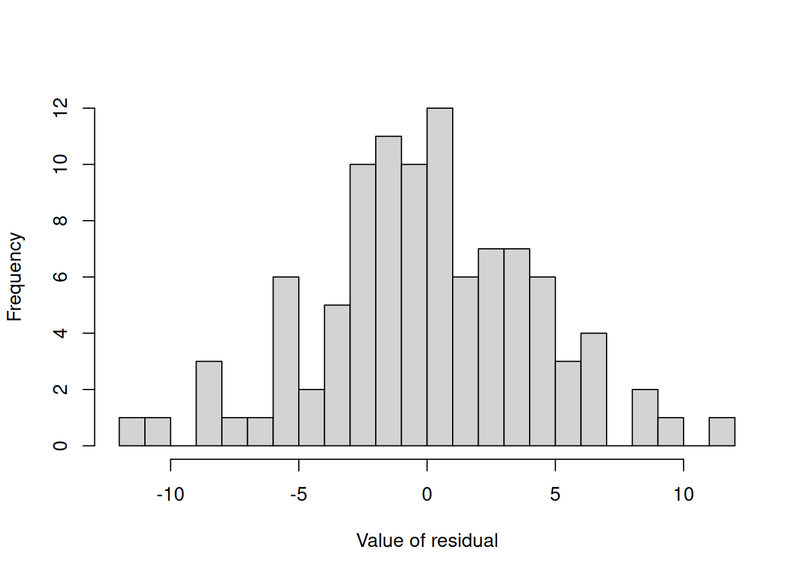
regression_2 model.
The resulting plot is shown in Figure 15.10, and as you can see the plot looks pretty damn close to normal. I could also run a Shapiro-Wilk test to check, using the shapiro.test() function:
shapiro.test(residuals(regression_2))
Shapiro-Wilk normality test
data: residuals(regression_2)
W = 0.99228, p-value = 0.8414again suggesting that the normality assumption isn’t in any danger here. As a third measure, we might also want to draw a QQ-plot using the qqnorm() function. The QQ plot is an excellent one to draw, and so you might not be surprised to discover that it’s one of the regression plots that we can produce using the plot() function:
plot(x = regression_2, which = 2)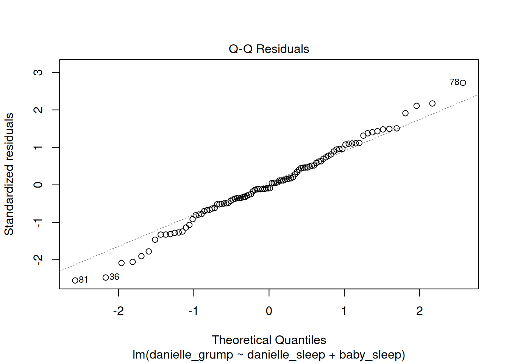
plot() function when the input is a linear regression object. It is obtained by setting which = 2.
The output is shown in Figure 15.11, showing the standardised residuals plotted as a function of their theoretical quantiles according to the regression model. The fact that the output appends the model specification to the picture is nice.
15.9.4 Checking the linearity of the relationship
The third thing we might want to test is the linearity of the relationships between the predictors and the outcomes. There’s a few different things that you might want to do in order to check this. Firstly, it never hurts to just plot the relationship between the fitted values \(\hat{Y}_i\) and the observed values \(Y_i\) for the outcome variable, as illustrated in Figure 15.12. To draw this we could use the fitted.values() function to extract the \(\hat{Y_i}\) values in much the same way that we used the residuals() function to extract the \(\epsilon_i\) values. So the commands to draw this figure might look like this:
yhat_2 <- fitted.values(object = regression_2)
plot(
x = yhat_2,
y = parenthood$danielle_grump,
xlab = "Fitted Values",
ylab = "Observed Values"
)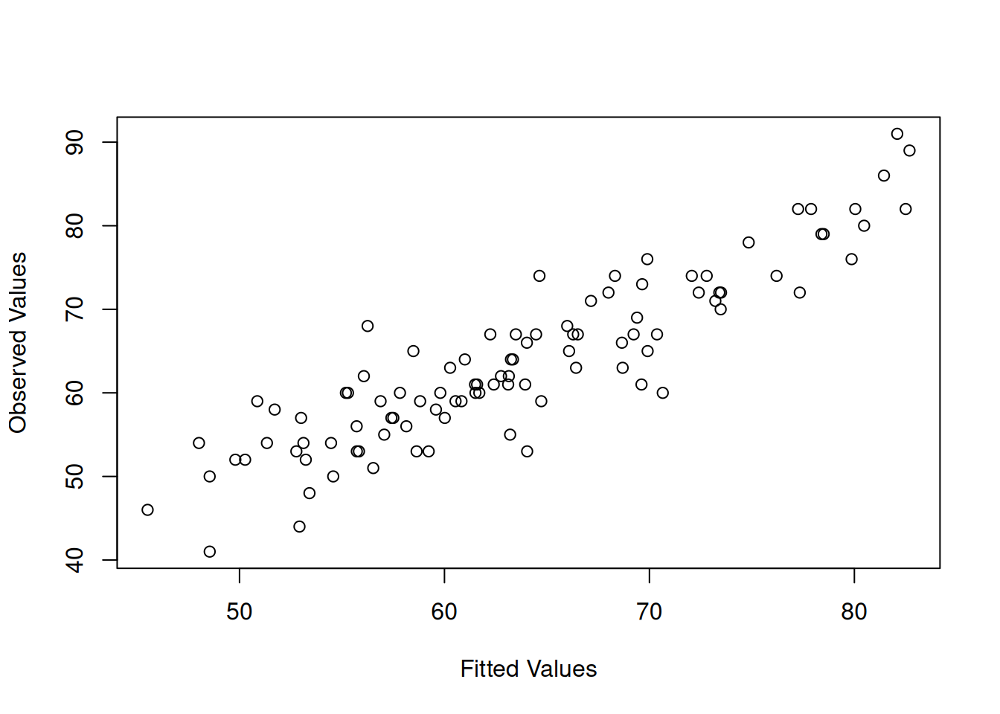
One of the reasons I like to draw these plots is that they give you a kind of “big picture view”. If this plot looks approximately linear, then we’re probably not doing too badly (though that’s not to say that there aren’t problems). However, if you can see big departures from linearity here, then it strongly suggests that you need to make some changes.
In any case, in order to get a more detailed picture it’s often more informative to look at the relationship between the fitted values and the residuals themselves. Again, we could draw this plot using low level commands, but there’s an easier way. Just plot() the regression model, and select which = 1:
plot(x = regression_2, which = 1)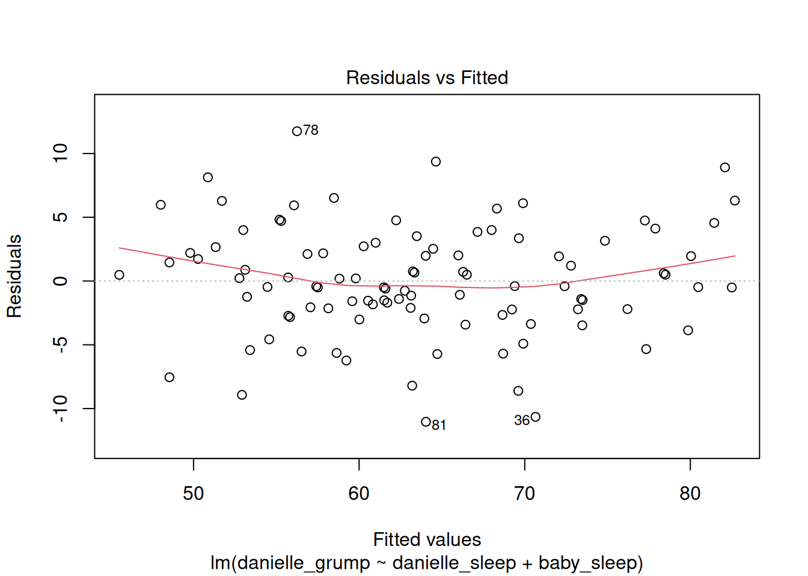
regression_2, with a line showing the relationship between the two. If this is horizontal and straight, then we can feel reasonably confident that the “average residual” for all “fitted values” is more or less the same. This is one of the standard regression plots produced by the plot() function when the input is a linear regression object. It is obtained by setting which = 1.
The output is shown in Figure 15.13. As you can see, not only does it draw the scatterplot showing the fitted value against the residuals, it also plots a line through the data that shows the relationship between the two. Ideally, this should be a straight, perfectly horizontal line. There’s some hint of curvature here, but it’s not clear whether or not we be concerned.
A somewhat more advanced version of the same plot is produced by the residualPlots() function in the car package. This function not only draws plots comparing the fitted values to the residuals, it does so for each individual predictor.
residualPlots(model = regression_2) Test stat Pr(>|Test stat|)
danielle_sleep 2.1604 0.03323 *
baby_sleep -0.5445 0.58733
Tukey test 2.1615 0.03066 *
---
Signif. codes: 0 '***' 0.001 '**' 0.01 '*' 0.05 '.' 0.1 ' ' 1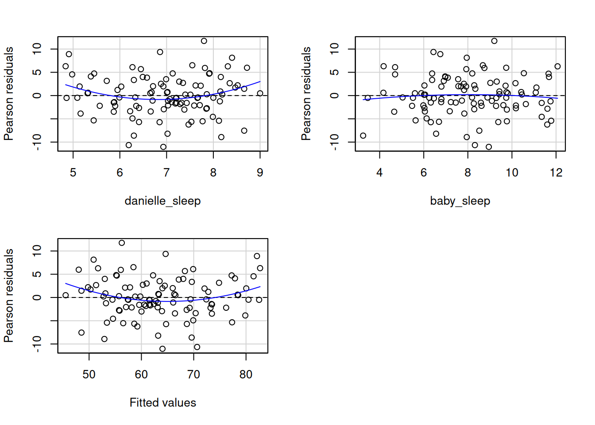
regression_2, along with similar plots for the two predictors individually. This plot is produced by the residualPlots() function in the car package. Note that it refers to the residuals as “Pearson residuals”, but in this context these are the same as ordinary residuals.
Note that this function also reports the results of a bunch of curvature tests. For a predictor variable \(X\) in some regression model, this test is equivalent to adding a new predictor to the model corresponding to \(X^2\), and running the \(t\)-test on the \(b\) coefficient associated with this new predictor. If it comes up significant, it implies that there is some nonlinear relationship between the variable and the residuals. The third line reported above is the Tukey test, which is basically the same test, except that instead of squaring one of the predictors and adding it to the model, you square the fitted-value. In any case, the fact that the curvature tests have come up significant is hinting that the curvature that we can see in Figure 15.13 and Figure 15.14 is genuine;13 although it still bears remembering that the pattern in Figure 15.12 is pretty damn straight: in other words the deviations from linearity are pretty small, and probably not worth worrying about.
13 And, if you take the time to check the residualPlots() for regression_1, it’s pretty clear that this isn’t some wacky distortion being caused by the fact that baby_sleep is a useless predictor variable. It’s an actual nonlinearity in the relationship between danielle_sleep and danielle_grump.
In a lot of cases, the solution to this problem (and many others) is to transform one or more of the variables. We discussed the basics of variable transformation in Section 7.2 and Section 7.3, but I do want to make special note of one additional possibility that I didn’t mention earlier: the Box-Cox transform. The Box-Cox function is a fairly simple one, but it’s very widely used \[
f(x,\lambda) = \frac{x^\lambda - 1}{\lambda}
\] for all values of \(\lambda\) except \(\lambda = 0\). When \(\lambda = 0\) we just take the natural logarithm (i.e., \(\ln(x)\)). You can calculate it using the boxCox() function in the car package. Better yet, if what you’re trying to do is convert a data to normal, or as normal as possible, there’s the powerTransform() function in the car package that can estimate the best value of \(\lambda\). Variable transformation is another topic that deserves a fairly detailed treatment, but it’s out of scope for this book.
15.9.5 Checking the homogeneity of variance
The regression models that we’ve talked about all make a homogeneity of variance assumption: the variance of the residuals is assumed to be constant. The “default” plot that R provides to help with doing this (which = 3 when using plot()) shows a plot of the square root of the size of the residual \(\sqrt{|\epsilon_i|}\), as a function of the fitted value \(\hat{Y}_i\).
plot(x = regression_2, which = 3)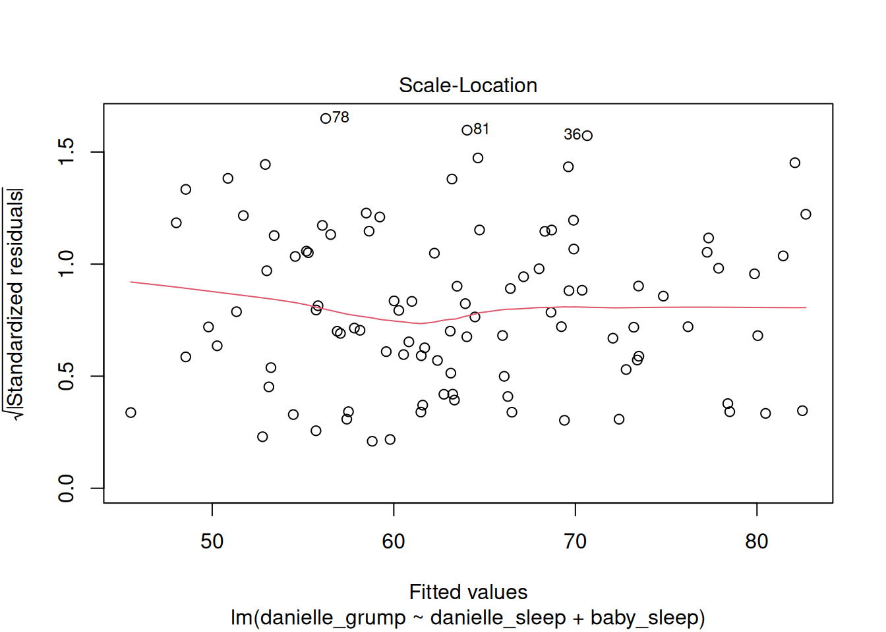
plot() function when the input is a linear regression object. It is obtained by setting which = 3.
The resulting plot is shown in Figure 15.15. Note that this plot actually uses the standardised residuals (i.e., converted to \(z\) scores) rather than the raw ones, but it’s immaterial from our point of view. What we’re looking to see here is a straight, horizontal line running through the middle of the plot.
A slightly more formal approach is to run hypothesis tests. The car package provides a function called ncvTest() (non-constant variance test) that can be used for this purpose (Cook & Weisberg, 1983). I won’t explain the details of how it works, other than to say that the idea is that what you do is run a regression to see if there is a relationship between the squared residuals \(\epsilon_i\) and the fitted values \(\hat{Y}_i\), or possibly to run a regression using all of the original predictors instead of just \(\hat{Y}_i\).14 Using the default settings, the ncvTest() looks for a relationship between \(\hat{Y}_i\) and the variance of the residuals, making it a straightforward analogue of Figure 15.15. So if we run it for our model,
14 Note that the underlying mechanics of the test aren’t the same as the ones I’ve described for regressions; the goodness of fit is assessed using what’s known as a score-test not an \(F\)-test, and the test statistic is (approximately) \(\chi^2\) distributed if there’s no relationship.
ncvTest(regression_2)Non-constant Variance Score Test
Variance formula: ~ fitted.values
Chisquare = 0.09317511, Df = 1, p = 0.76018We see that our original impression was right: there’s no violations of homogeneity of variance in this data.
It’s a bit beyond the scope of this chapter to talk too much about how to deal with violations of homogeneity of variance, but I’ll give you a quick sense of what you need to consider. The main thing to worry about, if homogeneity of variance is violated, is that the standard error estimates associated with the regression coefficients are no longer entirely reliable, and so your \(t\) tests for the coefficients aren’t quite right either. A simple fix to the problem is to make use of a “heteroscedasticity corrected covariance matrix” when estimating the standard errors. These are often called sandwich estimators, for reasons that only make sense if you understand the maths at a low level15 You don’t need to understand what this means (not for an introductory class), but it might help to note that there’s a hccm() function in the car() package that does it. Better yet, there’s the coeftest() function in the lmtest package which lets us use this covariance matrix when running our \(t\)-tests. To combine all this into one glorious diagnostic test, we would use this command:
15 Again, a footnote that should be read only by the two readers of this book that love linear algebra (mmmm… I love the smell of matrix computations in the morning; smells like… nerd). In these estimators, the covariance matrix for \(\mathbf{b}\) is given by \((\mathbf{X}^\mathsf{T} \mathbf{X})^{-1}\ \mathbf{X}^\mathsf{T} \boldsymbol{\Sigma} \mathbf{X} \ (\mathbf{X}^\mathsf{T} \mathbf{X})^{-1}\). See, it’s a “sandwich”? Assuming you think that \((\mathbf{X}^\mathsf{T} \mathbf{X})^{-1} = \mbox{"bread"}\) and \(\mathbf{X}^\mathsf{T} \boldsymbol{\Sigma} \mathbf{X} = \mbox{"filling"}\), that is. Which of course everyone does, right? In any case, the usual estimator is what you get when you set \(\boldsymbol{\Sigma} = \hat\sigma^2 \mathbf{I}\). The corrected version that I learned originally uses \(\boldsymbol{\Sigma} = \mbox{diag}(\epsilon_i^2)\) (White, 1980). However, the version that Fox & Weisberg (2011) have implemented as the default in the hccm() function is a tweak on this, proposed by Long & Ervin (2000). This version uses \(\boldsymbol{\Sigma} = \mbox{diag}(\epsilon_i^2/(1-h_i^2))\), where \(h_i\) is the \(i\)th hat value. Gosh, regression is fun, isn’t it?
coeftest(regression_2, vcov = hccm)
t test of coefficients:
Estimate Std. Error t value Pr(>|t|)
(Intercept) 125.965566 3.247285 38.7910 <2e-16 ***
danielle_sleep -8.950250 0.615820 -14.5339 <2e-16 ***
baby_sleep 0.010524 0.291565 0.0361 0.9713
---
Signif. codes: 0 '***' 0.001 '**' 0.01 '*' 0.05 '.' 0.1 ' ' 1Not surprisingly, these \(t\) tests are pretty much identical to the ones that we saw when we used the summary(regression_2) command earlier; because the homogeneity of variance assumption wasn’t violated. But if it had been, we might have seen some more substantial differences.
15.9.6 Checking for collinearity
The last kind of regression diagnostic that I’m going to discuss in this chapter is the use of variance inflation factors (VIFs), which are useful for determining whether or not the predictors in your regression model are too highly correlated with each other. There is a variance inflation factor associated with each predictor \(X_k\) in the model, and the formula for the \(k\)-th VIF is: \[
\mbox{VIF}_k = \frac{1}{1-{R^2_{(-k)}}}
\] where \(R^2_{(-k)}\) refers to \(R\)-squared value you would get if you ran a regression using \(X_k\) as the outcome variable, and all the other \(X\) variables as the predictors. The idea here is that \(R^2_{(-k)}\) is a very good measure of the extent to which \(X_k\) is correlated with all the other variables in the model. Better yet, the square root of the VIF is pretty interpretable: it tells you how much wider the confidence interval for the corresponding coefficient \(b_k\) is, relative to what you would have expected if the predictors are all nice and uncorrelated with one another. If you’ve only got two predictors, the VIF values are always going to be the same, as we can see if we use the vif() function (car package)…
vif(mod = regression_2)danielle_sleep baby_sleep
1.651038 1.651038 And since the square root of 1.65 is 1.28, we see that the correlation between our two predictors isn’t causing much of a problem.
To give a sense of how we could end up with a model that has bigger collinearity problems, suppose I were to run a much less interesting regression model, in which I tried to predict the day on which the data were collected, as a function of all the other variables in the data set. To see why this would be a bit of a problem, let’s have a look at the correlation matrix for all four variables:
cor(parenthood) danielle_sleep baby_sleep danielle_grump day
danielle_sleep 1.00000000 0.62794934 -0.90338404 -0.09840768
baby_sleep 0.62794934 1.00000000 -0.56596373 -0.01043394
danielle_grump -0.90338404 -0.56596373 1.00000000 0.07647926
day -0.09840768 -0.01043394 0.07647926 1.00000000We have some fairly large correlations between some of our predictor variables! When we run the regression model and look at the VIF values, we see that the collinearity is causing a lot of uncertainty about the coefficients. First, run the regression…
regression_3 <- lm(day ~ baby_sleep + danielle_sleep + danielle_grump, parenthood)and second, look at the VIFs…
vif(regression_3) baby_sleep danielle_sleep danielle_grump
1.651064 6.102337 5.437903 Yep, that’s some mighty fine collinearity you’ve got there.
15.10 Model selection
One fairly major problem that remains is the problem of “model selection”. That is, if we have a data set that contains several variables, which ones should we include as predictors, and which ones should we not include? In other words, we have a problem of variable selection. In general, model selection is a complex business, but it’s made somewhat simpler if we restrict ourselves to the problem of choosing a subset of the variables that ought to be included in the model. Nevertheless, I’m not going to try covering even this reduced topic in a lot of detail. Instead, I’ll talk about two broad principles that you need to think about; and then discuss one concrete tool that R provides to help you select a subset of variables to include in your model. Firstly, the two principles:
- It’s nice to have an actual substantive basis for your choices. That is, in a lot of situations you the researcher have good reasons to pick out a smallish number of possible regression models that are of theoretical interest; these models will have a sensible interpretation in the context of your field. Never discount the importance of this. Statistics serves the scientific process, not the other way around.
- To the extent that your choices rely on statistical inference, there is a trade off between simplicity and goodness of fit. As you add more predictors to the model, you make it more complex; each predictor adds a new free parameter (i.e., a new regression coefficient), and each new parameter increases the model’s capacity to “absorb” random variations. So the goodness of fit (e.g., \(R^2\)) continues to rise as you add more predictors no matter what. If you want your model to be able to generalise well to new observations, you need to avoid throwing in too many variables.
This latter principle is often referred to as Ockham’s razor, and is often summarised in terms of the following pithy saying: do not multiply entities beyond necessity. In this context, it means: don’t chuck in a bunch of largely irrelevant predictors just to boost your \(R^2\). Hm. Yeah, the original was better.
In any case, what we need is an actual mathematical criterion that will implement the qualitative principle behind Ockham’s razor in the context of selecting a regression model. As it turns out there are several possibilities. The one that I’ll talk about is the Akaike information criterion [AIC; Akaike (1974)] simply because it’s the default one used in the R function step(). In the context of a linear regression model (and ignoring terms that don’t depend on the model in any way!), the AIC for a model that has \(K\) predictor variables plus an intercept is:16 \[
\mbox{AIC} = \displaystyle\frac{\mbox{SS}_{res}}{\hat{\sigma}^2} + 2K
\] The smaller the AIC value, the better the model performance is. If we ignore the low level details, it’s fairly obvious what the AIC does: on the left we have a term that increases as the model predictions get worse; on the right we have a term that increases as the model complexity increases. The best model is the one that fits the data well (low residuals; left hand side) using as few predictors as possible (low \(K\); right hand side). In short, this is a simple implementation of Ockham’s razor.
16 Note, however, that the step() function computes the full version of AIC, including the irrelevant constants that I’ve dropped here. As a consequence this equation won’t correctly describe the AIC values that you see in the outputs here. However, if you calculate the AIC values using my formula for two different regression models and take the difference between them, this will be the same as the differences between AIC values that step() reports. In practice, this is all you care about: the actual value of an AIC statistic isn’t very informative, but the differences between two AIC values are useful, since these provide a measure of the extent to which one model outperforms another.
15.10.1 Backward elimination
Okay, let’s have a look at the step() function at work. In this example I’ll keep it simple and use only the basic backward elimination approach. That is, start with the complete regression model, including all possible predictors. Then, at each “step” we try all possible ways of removing one of the variables, and whichever of these is best (in terms of lowest AIC value) is accepted. This becomes our new regression model; and we then try all possible deletions from the new model, again choosing the option with lowest AIC. This process continues until we end up with a model that has a lower AIC value than any of the other possible models that you could produce by deleting one of its predictors. Let’s see this in action. First, I need to define the model from which the process starts.
full_model <- lm(
formula = danielle_grump ~ danielle_sleep + baby_sleep + day,
data = parenthood
)That’s nothing terribly new: yet another regression. Booooring. Still, we do need to do it: the object argument to the step() function will be this regression model. With this in mind, I would call the step() function using the following command:
step(
object = full_model, # start at the full model
direction = "backward" # allow it remove predictors but not add them
)Start: AIC=299.08
danielle_grump ~ danielle_sleep + baby_sleep + day
Df Sum of Sq RSS AIC
- baby_sleep 1 0.1 1837.2 297.08
- day 1 1.6 1838.7 297.16
<none> 1837.1 299.08
- danielle_sleep 1 4909.0 6746.1 427.15
Step: AIC=297.08
danielle_grump ~ danielle_sleep + day
Df Sum of Sq RSS AIC
- day 1 1.6 1838.7 295.17
<none> 1837.2 297.08
- danielle_sleep 1 8103.0 9940.1 463.92
Step: AIC=295.17
danielle_grump ~ danielle_sleep
Df Sum of Sq RSS AIC
<none> 1838.7 295.17
- danielle_sleep 1 8159.9 9998.6 462.50
Call:
lm(formula = danielle_grump ~ danielle_sleep, data = parenthood)
Coefficients:
(Intercept) danielle_sleep
125.956 -8.937 although in practice I didn’t need to specify direction because "backward" is the default. The first line of the output reports the AIC value for the current best model, 299.08. Since small AIC values are good, we want to see if we can get a value smaller than 299.08 by deleting one of those three predictors. So what R does is try all three possibilities, calculate the AIC values for each one, and then print out a short table with the results. To read this table, it helps to note that the text in the left hand column is telling you what change R made to the regression model. So the line that reads <none> is the actual model we started with, and you can see on the right hand side that this still corresponds to an AIC value of 299.08 (obviously). The other three rows in the table correspond to the other three models that it looked at: it tried removing the baby_sleep variable, which is indicated by - baby_sleep, and this produced an AIC value of 297.08. That was the best of the three moves, so it’s at the top of the table. So, this move is accepted, and now we start again. There are two predictors left in the model, danielle_sleep and day, so it tries deleting those, and finds that removing the day variable lowers the AIC value from 297.08 to 295.17. So R decides to keep that change too, and moves on. This time around, there’s no further deletions that can actually improve the AIC value. So the step() function stops, and prints out the result of the best regression model it could find, which is (perhaps not all that surprisingly) the regression_1 model that we started with at the beginning of the chapter.
15.10.2 Forward selection
As an alternative, you can also try forward selection. This time around we start with the smallest possible model as our start point, and only consider the possible additions to the model. However, there’s one complication: you also need to tell step() what the largest possible model you’re willing to entertain is, using the scope argument. The simplest usage is like this:
null_model <- lm(danielle_grump ~ 1, parenthood) # intercept only.
step(
object = null_model, # start with null_model
direction = "forward", # only consider "addition" moves
scope = danielle_grump ~ danielle_sleep + baby_sleep + day # largest model allowed
)Start: AIC=462.5
danielle_grump ~ 1
Df Sum of Sq RSS AIC
+ danielle_sleep 1 8159.9 1838.7 295.17
+ baby_sleep 1 3202.7 6795.9 425.89
<none> 9998.6 462.50
+ day 1 58.5 9940.1 463.92
Step: AIC=295.17
danielle_grump ~ danielle_sleep
Df Sum of Sq RSS AIC
<none> 1838.7 295.17
+ day 1 1.55760 1837.2 297.08
+ baby_sleep 1 0.02858 1838.7 297.16
Call:
lm(formula = danielle_grump ~ danielle_sleep, data = parenthood)
Coefficients:
(Intercept) danielle_sleep
125.956 -8.937 If I do this, the output takes on a similar form, but now it only considers addition (+) moves rather than deletion (-) moves. As you can see, it’s found the same model. In general though, forward and backward selection don’t always have to end up in the same place.
15.10.3 A caveat
Automated variable selection methods are seductive things, especially when they’re bundled up in (fairly) simple functions like step(). They provide an element of objectivity to your model selection, and that’s kind of nice. Unfortunately, they’re sometimes used as an excuse for thoughtlessness. No longer do you have to think carefully about which predictors to add to the model and what the theoretical basis for their inclusion might be… everything is solved by the magic of AIC. And if we start throwing around phrases like Ockham’s razor, well, it sounds like everything is wrapped up in a nice neat little package that no-one can argue with.
Or, perhaps not. Firstly, there’s very little agreement on what counts as an appropriate model selection criterion. When I was taught backward elimination as an undergraduate, we used \(F\)-tests to do it, because that was the default method used by the software. The default in the step() function is AIC, and since this is an introductory text that’s the only method I’ve described, but the AIC is hardly the Word of the Gods of Statistics. It’s an approximation, derived under certain assumptions, and it’s guaranteed to work only for large samples when those assumptions are met. Alter those assumptions and you get a different criterion, like the BIC for instance. Take a different approach again and you get the NML criterion. Decide that you’re a Bayesian and you get model selection based on posterior odds ratios. Then there are a bunch of regression specific tools that I haven’t mentioned. And so on. All of these different methods have strengths and weaknesses, and some are easier to calculate than others (AIC is probably the easiest of the lot, which might account for its popularity). Almost all of them produce the same answers when the answer is “obvious” but there’s a fair amount of disagreement when the model selection problem becomes hard.
What does this mean in practice? Well, you could go and spend several years teaching yourself the theory of model selection, learning all the ins and outs of it; so that you could finally decide on what you personally think the right thing to do is. Speaking as someone who actually did that, I wouldn’t recommend it: you’ll probably come out the other side even more confused than when you started. A better strategy is to show a bit of common sense… if you’re staring at the results of a step() procedure, and the model that makes sense is close to having the smallest AIC, but is narrowly defeated by a model that doesn’t make any sense… trust your instincts. Statistical model selection is an inexact tool, and as I said at the beginning, interpretability matters.
15.10.4 Comparing two regression models
An alternative to using automated model selection procedures is for the researcher to explicitly select two or more regression models to compare to each other. You can do this in a few different ways, depending on what research question you’re trying to answer. Suppose we want to know whether or not the amount of sleep that my son got has any relationship to my grumpiness, over and above what we might expect from the amount of sleep that I got. We also want to make sure that the day on which we took the measurement has no influence on the relationship. That is, we’re interested in the relationship between baby_sleep and danielle_grump, and from that perspective danielle_sleep and day are nuisance variable or covariates that we want to control for. In this situation, what we would like to know is whether danielle_grump ~ danielle_sleep + day + baby_sleep (which I’ll call Model 1, or M1) is a better regression model for these data than danielle_grump ~ danielle_sleep + day (which I’ll call Model 0, or M0). There are two different ways we can compare these two models, one based on a model selection criterion like AIC, and the other based on an explicit hypothesis test. I’ll show you the AIC based approach first because it’s simpler, and follows naturally from the step() function that we saw in the last section. The first thing I need to do is actually run the regressions:
M0 <- lm(danielle_grump ~ danielle_sleep + day, parenthood)
M1 <- lm(danielle_grump ~ danielle_sleep + day + baby_sleep, parenthood)Now that I have my regression models, I could use the summary() function to run various hypothesis tests and other useful statistics, just as we have discussed throughout this chapter. However, since the current focus on model comparison, I’ll skip this step and go straight to the AIC calculations. Conveniently, the AIC() function in R lets you input several regression models, and it will spit out the AIC values for each of them:17
17 While I’m on this topic I should point out that there is also a function called BIC() which computes the Bayesian information criterion (BIC) for the models. So you could type BIC(M0,M1) and get a very similar output. In fact, while I’m not particularly impressed with either AIC or BIC as model selection methods, if you do find yourself using one of these two, the empirical evidence suggests that BIC is the better criterion of the two. In most simulation studies that I’ve seen, BIC does a much better job of selecting the correct model.
AIC(M0, M1) df AIC
M0 4 582.8681
M1 5 584.8646Since Model 0 has the smaller AIC value, it is judged to be the better model for these data.
A somewhat different approach to the problem comes out of the hypothesis testing framework. Suppose you have two regression models, where one of them (Model 0) contains a subset of the predictors from the other one (Model 1). That is, Model 1 contains all of the predictors included in Model 0, plus one or more additional predictors. When this happens we say that Model 0 is nested within Model 1, or possibly that Model 0 is a submodel of Model 1. Regardless of the terminology what this means is that we can think of Model 0 as a null hypothesis and Model 1 as an alternative hypothesis. And in fact we can construct an \(F\) test for this in a fairly straightforward fashion. We can fit both models to the data and obtain a residual sum of squares for both models. I’ll denote these as SS\(_{res}^{(0)}\) and SS\(_{res}^{(1)}\) respectively. The superscripting here just indicates which model we’re talking about. Then our \(F\) statistic is \[ F = \frac{(\mbox{SS}_{res}^{(0)} - \mbox{SS}_{res}^{(1)})/k}{(\mbox{SS}_{res}^{(1)})/(N-p-1)} \] where \(N\) is the number of observations, \(p\) is the number of predictors in the full model (not including the intercept), and \(k\) is the difference in the number of parameters between the two models.18 The degrees of freedom here are \(k\) and \(N-p-1\). Note that it’s often more convenient to think about the difference between those two SS values as a sum of squares in its own right. That is: \[ \mbox{SS}_\Delta = \mbox{SS}_{res}^{(0)} - \mbox{SS}_{res}^{(1)} \] The reason why this is helpful is that we can express \(\mbox{SS}_\Delta\) a measure of the extent to which the two models make different predictions about the outcome variable. Specifically: \[ \mbox{SS}_\Delta = \sum_{i} \left( \hat{y}_i^{(1)} - \hat{y}_i^{(0)} \right)^2 \] where \(\hat{y}_i^{(0)}\) is the fitted value for \(y_i\) according to model \(M_0\) and \(\hat{y}_i^{(1)}\) is the fitted value for \(y_i\) according to model \(M_1\).
18 It’s worth noting in passing that this same \(F\) statistic can be used to test a much broader range of hypotheses than those that I’m mentioning here. Very briefly: notice that the nested model M0 corresponds to the full model M1 when we constrain some of the regression coefficients to zero. It is sometimes useful to construct submodels by placing other kinds of constraints on the regression coefficients. For instance, maybe two different coefficients might have to sum to zero, or something like that. You can construct hypothesis tests for those kind of constraints too, but it is somewhat more complicated and the sampling distribution for \(F\) can end up being something known as the non-central \(F\) distribution, which is waaaaay beyond the scope of this book! All I want to do is alert you to this possibility.
Okay, so that’s the hypothesis test that we use to compare two regression models to one another. Now, how do we do it in R? The answer is to use the anova() function. All we have to do is input the two models that we want to compare (null model first):
anova(M0, M1)Analysis of Variance Table
Model 1: danielle_grump ~ danielle_sleep + day
Model 2: danielle_grump ~ danielle_sleep + day + baby_sleep
Res.Df RSS Df Sum of Sq F Pr(>F)
1 97 1837.2
2 96 1837.1 1 0.063688 0.0033 0.9541Note that, just like we saw with the output from the step() function, R has used the acronym RSS to refer to the residual sum of squares from each model. That is, RSS in this output corresponds to SS\(_{res}\) in the formula above. Since we have \(p>.05\) we retain the null hypothesis (M0). This approach to regression, in which we add all of our covariates into a null model, and then add the variables of interest into an alternative model, and then compare the two models in hypothesis testing framework, is often referred to as hierarchical regression.
15.11 Epilogue: model selection after stepwise regression
The model selection section above walks through backward elimination and forward selection using step() and AIC, and even at the time I flagged some discomfort with it: the sidebar a few paragraphs back already admits that “I’m not particularly impressed with either AIC or BIC as model selection methods.” That discomfort has, if anything, hardened into something closer to consensus advice against the whole stepwise strategy, rather than just a preference between AIC and BIC. The specific worry is that repeatedly adding or dropping predictors based on the same data used to fit the model turns model selection into an extra, hidden multiple-comparisons problem: the \(p\)-values and confidence intervals you get out the other end of a stepwise procedure describe the model you ended up with, not the uncertainty involved in choosing it, so they tend to be overconfident, sometimes substantially so. Whittingham et al. (2006) make this case in detail (from ecology and behavioural research, but the argument generalises well beyond that literature), and it’s a big part of why stepwise selection has fallen out of favour as a default recommendation in applied statistics teaching since this chapter was written.
The practical alternatives that have taken its place fall into two broad families, both covered well by Hastie et al. (2009) if you want the full technical treatment. The first is cross-validation: instead of picking a model based on how well it fits the data used to build it, you fit candidate models on one subset of the data and evaluate them on a held-out subset they never saw, which at least directly measures the thing you actually care about (how well the model generalises) rather than a proxy for it like AIC. The second is regularisation – methods like ridge regression and the lasso (Hastie et al., 2009) that don’t select a subset of predictors at all, but instead fit all of them simultaneously while shrinking their coefficients toward zero (the lasso, unlike ridge regression, can shrink some coefficients all the way to exactly zero, which gives it a variable-selection flavour without the stepwise search). Both approaches are a genuinely different way of thinking about the problem than anything in this chapter, and both would need considerably more machinery than an introductory regression chapter can fairly introduce – which is exactly why I’ve kept the original stepwise-AIC material here rather than trying to shoehorn a proper treatment of either one in. If you find yourself doing model selection for real, though, treat this section as a description of a historically important approach rather than a recommendation for current practice.
15.12 Summary
- Basic ideas in linear regression and how regression models are estimated (Section 15.1 and Section 15.2).
- Multiple linear regression (Section 15.3).
- Measuring the overall performance of a regression model using \(R^2\) (Section 15.4).
- Hypothesis tests for regression models (Section 15.5).
- Calculating confidence intervals for regression coefficients, and standardised coefficients (Section 15.7).
- The assumptions of regression (Section 15.8) and how to check them (Section 15.9).
- Selecting a regression model (Section 15.10).